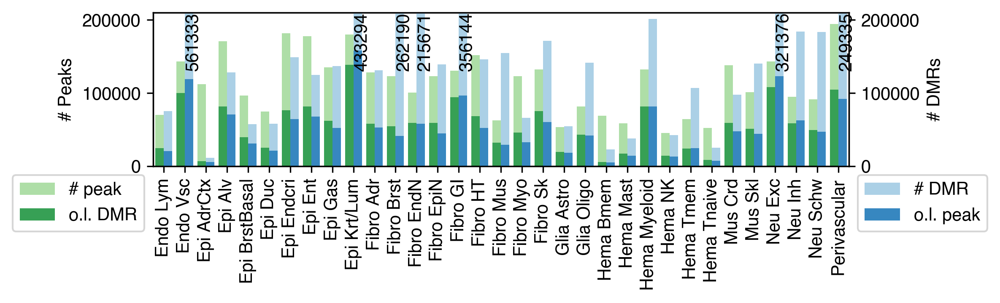
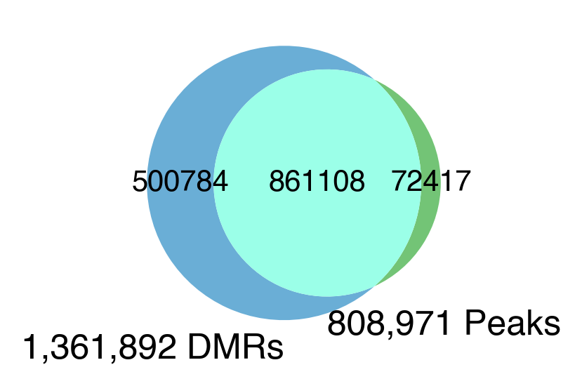
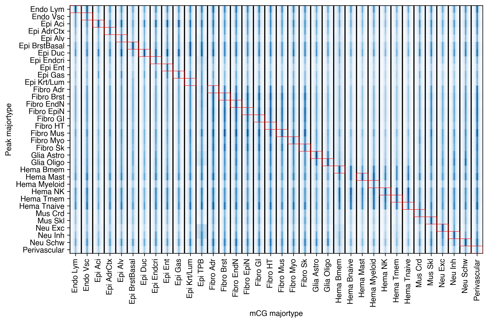
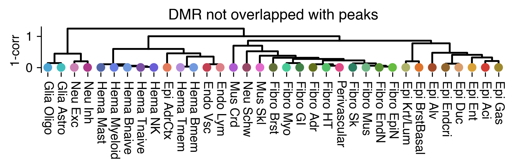
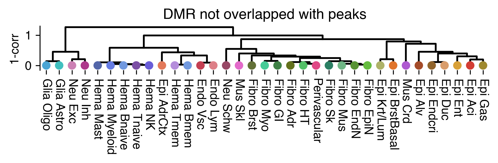
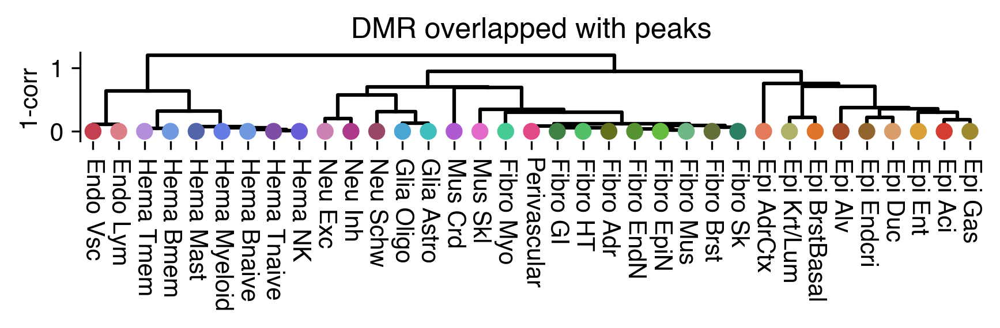
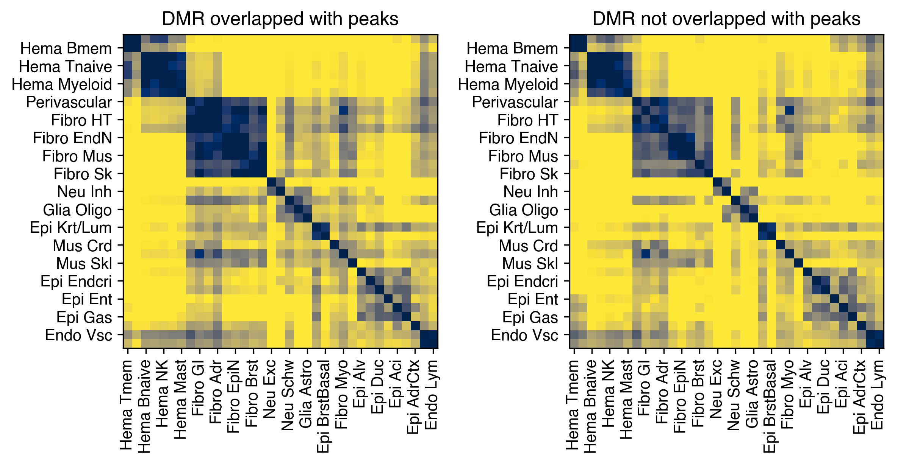
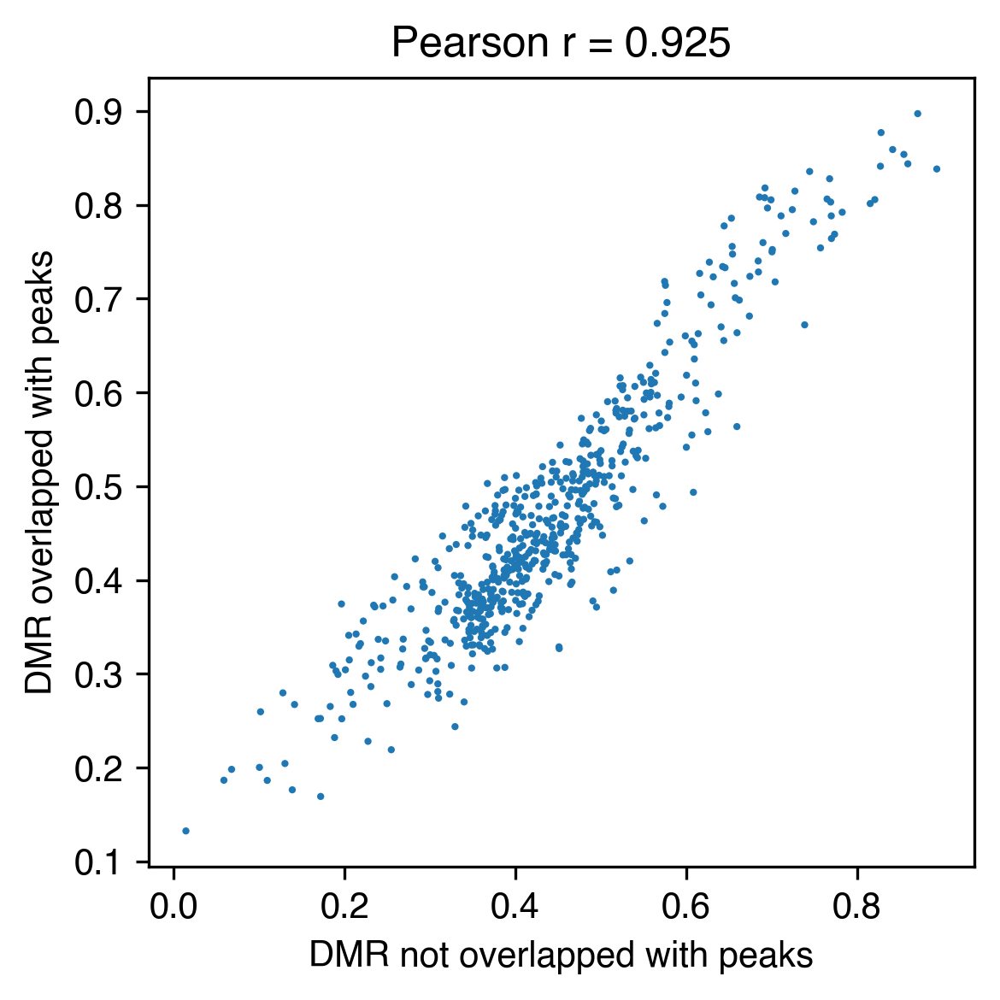

5. DMR overlap ATAC#
Part of the Fig. 2 chapter — see it for the panel-by-panel map. The first code cell sets ENTEX_ROOT and activates the no-overwrite guard (see the Reproduction guide). Outputs shown are the author’s original run.
📥 Required input files#
This notebook reads the following files (paths resolve from ENTEX_ROOT/REF_ROOT; the setup cell sets them). See the chapter’s inputs.md for RAW-vs-derived tags.
f'{indir}L1color.tsv'· metadata: colorf'{indir}scATAC/celltypes.txt.gz'· scATAC peaksf'{indir}scATAC/peak/peaklist.txt'· scATAC peaksf'{indir}scATAC/cCREs.bed.gz'· scATAC peaksf'{indir}scATAC/atac2majortype.tsv'· scATAC peaksf'{out_dir}top200k_atac_count.txt'· ATACf'{out_dir}top200k_dmr_count.txt'· DMRf'{out_dir}dms{ndms}_atac_count.txt'· ATACf'{out_dir}dms{ndms}_dmr_count.txt'· DMRf'{out_dir}/dms{ndms}_atac_count.txt'· ATACf'{out_dir}/dms{ndms}_dmr_count.txt'· DMRf'{out_dir}/top200k_atac_count.txt'· ATACf'{out_dir}/top200k_dmr_count.txt'· DMRf'{out_dir}/dms{ndms}_merged_atac_count_new.txt'· ATACf'{out_dir}/dms{ndms}_merged_dmr_count_new.txt'· DMRf'{out_dir}/dms{ndms}_merged_atac_count.txt'· ATACf'{out_dir}/dms{ndms}_merged_dmr_count.txt'· DMRf'{peak_dir}cCREs_distal2k_104celltype.npz'· otherf'{outdir}flank_bed/cCREs_distal2k.split{split}.slop{ws}b.{w}b.{bw_ct}.CGN-Merge.hdf'· otherf'{outdir}overlap_atac/atac_count.txt'· ATACf'{outdir}overlap_atac/dmr_count.txt'· DMRf'{outdir}overlap_atac/majortype_36groups/subtype_dmr.mcds'· mC matrix (mcds)f'{indir}subtype_meta.tsv'· metadataf'{outdir}overlap_atac/majortype_36groups/L1_merged_dmr.hdf'· DMRf'{outdir}overlap_atac/majortype_36groups/merged_dmr_nonpeak.bed'· DMRf'{outdir}overlap_atac/majortype_36groups/merged_dmr_peak.bed'· DMRf'{indir}DMR/majortype-subtype/{ct}_dmr'· DMRf'{indir}DMR/majortype-subtype/{mt}_dmr'· DMR
# === Reproduction setup — edit ENTEX_ROOT / REF_ROOT for your machine ===
import os, sys
ENTEX_ROOT = os.environ.get('ENTEX_ROOT', '/large_storage/zhoulab/zhoujt/project/ENTEx')
REF_ROOT = os.environ.get('REF_ROOT', '/large_storage/zhoulab/ref')
BOOK_ROOT = os.environ.get('BOOK_ROOT', f'{ENTEX_ROOT}/analysis/HumanCellEpigenomeAtlas')
sys.path.insert(0, BOOK_ROOT)
os.chdir(f'{ENTEX_ROOT}/analysis') # original working directory
import repro_guard # no-overwrite guard (default: skip existing)
import os
import numpy as np
import pandas as pd
from glob import glob
from scipy.sparse import csr_matrix
from scipy.stats import zscore
from concurrent.futures import ProcessPoolExecutor, as_completed
import anndata
from ALLCools.mcds import MCDS, RegionDS
from ALLCools.clustering import *
from ALLCools.plot import *
import seaborn as sns
import matplotlib as mpl
import matplotlib.pyplot as plt
mpl.style.use('default')
mpl.rcParams['pdf.fonttype'] = 42
mpl.rcParams['ps.fonttype'] = 42
mpl.rcParams['font.family'] = 'sans-serif'
mpl.rcParams['font.sans-serif'] = 'Helvetica'
import warnings
warnings.filterwarnings("ignore")
indir = f'{ENTEX_ROOT}/'
outdir = f'{indir}analysis/DMR/'
# L2_meta = pd.read_csv(f'{indir}subtype_meta.tsv', sep='\t', header=0, index_col=0)
# L2_annot = L2_meta['celltype_L2_both_abbr'].to_dict()
# L2_meta.loc[L2_meta.index.str.split('-').str[0]=='c5', 'celltype_L2_both_abbr'].sort_values()
# L1_meta
| L1_abbr | L1_annot | color | |
|---|---|---|---|
| L1 | |||
| c33 | Endo Lym | Endo Lymphatic | #dd7f87 |
| c3 | Endo Vsc | Endo Vascular | #c43f52 |
| c22 | Epi Aci | Epi Acinar | #d33d33 |
| c9 | Epi AdrCtx | Epi Adrenal | #e37a5b |
| c20 | Epi Alv | Epi Alveolar | #a44b29 |
| c25 | Epi BrstBasal | Epi Breast Basal | #e0742b |
| c30 | Epi Duc | Epi Ductal | #d99d6c |
| c13 | Epi Endcri | Epi Endocrine | #91652d |
| c8 | Epi Ent | Epi Enteric | #d9a138 |
| c4 | Epi Gas | Epi Gastric | #9f892f |
| c18 | Epi Krt/Lum | Epi Keratinous/Luminal | #aeb268 |
| c2 | Epi TPB | Epi Trophoblast | #a9b836 |
| c29 | Fibro Adr | Fibro Adrenal | #63711c |
| c17 | Fibro Brst | Fibro Breast | #627037 |
| c19 | Fibro EndN | Fibro Endoneurial | #579232 |
| c28 | Fibro EpiN | Fibro Epineurial | #65bc3f |
| c6 | Fibro GI | Fibro Gastrointestinal | #3f8146 |
| c11 | Fibro HT | Fibro Heart | #53c067 |
| c32 | Fibro Mus | Fibro Muscular | #6fb685 |
| c34 | Fibro Myo | Myofibroblast | #46cb97 |
| c23 | Fibro Sk | Fibro Skin | #2b7f63 |
| c31 | Glia Astro | Glia Astrocyte | #41bfbf |
| c14 | Glia Oligo | Glia Oligodendrocyte | #4aa5d4 |
| c35 | Hema Bmem | Hema Bmem | #7199df |
| c36 | Hema Bnaive | Hema Bnaive | #7199df |
| c24 | Hema Mast | Hema Mast | #5366a9 |
| c0 | Hema Myeloid | Hema Myeloid | #657ce4 |
| c27 | Hema NK | Hema NK | #695dd8 |
| c1 | Hema Tmem | Hema Tmem | #b58edb |
| c15 | Hema Tnaive | Hema Tnaive | #7c4fa5 |
| c26 | Mus Crd | Mus Cardiac | #af5ad1 |
| c5 | Mus Skl | Mus Skeletal | #e36aca |
| c10 | Neu Exc | Neu Excitatory | #cc81b4 |
| c16 | Neu Inh | Neu Inhibitory | #ad398b |
| c21 | Neu Schw | Neu Schwann | #984866 |
| c12 | Perivascular | Perivascular | #e04986 |
L1_meta = pd.read_csv(f'{indir}L1color.tsv', sep='\t', header=0, index_col=0)
# L1_meta = L1_meta.drop(['c35', 'c36'], axis=0)
L1_meta = L1_meta.drop(['c7'], axis=0)
L1_annot = L1_meta['L1_abbr'].to_dict()
L1_color = L1_meta['color'].to_dict()
L1_color.update({L1_annot[k]: L1_color[k] for k in L1_annot if k in L1_color}) # also key by name
import cooler
chrom_size_path = f'{REF_ROOT}/hg38/fasta/hg38.main.chrom.sizes'
chrom_sizes = cooler.read_chromsizes(chrom_size_path, all_names=True)
chrom_sizes = chrom_sizes.iloc[:22]
majortype DMR#
## write majortype hypo DMR with >=2 DMS
ndms = 2
for ngroup in [29, 33, 34, 35, 36]:
dmr_dir = f'{indir}DMR/majortype/{ngroup}groups'
out_dir = f'{indir}analysis/DMR/overlap_atac/majortype_{ngroup}groups/'
dmr_ds = RegionDS.open(dmr_dir, region_dim='dmr')
dmr = dmr_ds[['dmr_chrom', 'dmr_start', 'dmr_end', 'dmr_ndms']].to_pandas()
dmr[['dmr_start', 'dmr_end', 'dmr_ndms']] = dmr[['dmr_start', 'dmr_end', 'dmr_ndms']].astype(int)
seldmr = (dmr['dmr_ndms']>=ndms) & (dmr['dmr_chrom'].isin(chrom_sizes.index))
dmr_ds = dmr_ds.sel({'dmr':dmr.index[seldmr]})
dmr = dmr.loc[seldmr]
dmr_state = dmr_ds['dmr_state'].to_pandas().T
dmr_data = dmr_ds['dmr_da_frac'].to_pandas().T.fillna(1)
if 'c36' not in dmr_state.columns:
dmr_state = dmr_state.rename({'c7':'c35', 'c35':'c36'}, axis=1)
dmr_data = dmr_data.rename({'c7':'c35', 'c35':'c36'}, axis=1)
for ct in dmr_state.columns:
dmr_tmp = dmr.loc[dmr_state[ct]==-1]
dmr_tmp['mCG'] = dmr_data[ct].copy()
dmr_tmp = dmr_tmp.reset_index()[['dmr_chrom', 'dmr_start', 'dmr_end', 'dmr', 'dmr_ndms', 'mCG']]
dmr_tmp.sort_values(by=['dmr_chrom', 'dmr_start']).to_csv(f'{dmr_dir}/hypo/{ct}_hypo.bed',
sep='\t', header=False, index=False)
## write majortype atac peaks
import scipy.io as sio
peak_matrix = sio.mmread(f'{indir}scATAC/matrix.tsv.gz')
atac_ct_list = pd.read_csv(f'{indir}scATAC/celltypes.txt.gz', index_col=0, header=None).index
selct = pd.read_csv(f'{indir}scATAC/peak/peaklist.txt', sep='.', index_col=0, header=None).index
selct = atac_ct_list[atac_ct_list.isin(selct)]
print(selct.shape[0])
peak = pd.read_csv(f'{indir}scATAC/cCREs.bed.gz', sep='\t', names=['chrom','start','end'],
header=None, index_col=None)
peak_matrix = peak_matrix.tocsr()[:, atac_ct_list.isin(selct)]
selp = peak['chrom'].isin(chrom_sizes.index) & (peak_matrix.getnnz(axis=1)>0)
peak = peak.loc[selp]
peak_matrix = peak_matrix[selp]
atac2mt = pd.read_csv(f'{indir}scATAC/atac2majortype.tsv', sep='\t', header=None, index_col=None)
atac2mt = atac2mt.loc[~atac2mt[1].isna()]
mt2atac = {xx:[] for xx in L1_meta['L1_abbr']}
for xx,yy in atac2mt.values:
for y in yy.split(','):
mt2atac[y].append(xx)
selct = pd.Series(np.arange(len(selct)), index=selct)
ctcre = {}
for ct in L1_meta.index:
ctname = L1_annot[ct]
if len(mt2atac[ctname])>0:
selp = peak_matrix[:, selct.loc[mt2atac[ctname]]].getnnz(axis=1)>0
peak.loc[selp].sort_values(['chrom', 'start']).to_csv(f'{indir}scATAC/peak/majortype/{ct}.bed',
header=False, index=False, sep='\t')
## select DMR by ndms and overlap with peaks
# ndms=5
# ngroup=36
for ngroup in 29 33 34 35 36; do
for ndms in 2 3 4 5; do (
atac_dir=/large_storage/zhoulab/zhoujt/project/ENTEx/scATAC/peak/majortype
dmr_dir=/large_storage/zhoulab/zhoujt/project/ENTEx/DMR/majortype/${ngroup}groups
out_dir=/large_storage/zhoulab/zhoujt/project/ENTEx/analysis/DMR/overlap_atac/majortype_${ngroup}groups
for i in `seq 0 36`; do awk -v n=$ndms '$5>=n' ${dmr_dir}/hypo/c${i}_hypo.bed | cut -f1-3 > ${out_dir}/c${i}_dmr.bed; done
for i in `seq 0 36`; do echo c${i} $(bedtools closest -a ${atac_dir}/c${i}.bed -b ${out_dir}/c${i}_dmr.bed -d | awk '($7>=0) && ($7<1000)' | sort -k1,1 -k2,2n -u | wc -l) $(cat ${atac_dir}/c${i}.bed | wc -l); done > ${out_dir}/dms${ndms}_atac_count.txt
for i in `seq 0 36`; do echo c${i} $(bedtools closest -b ${atac_dir}/c${i}.bed -a ${out_dir}/c${i}_dmr.bed -d | awk '($7>=0) && ($7<1000)' | sort -k1,1 -k2,2n -u | wc -l) $(cat ${out_dir}/c${i}_dmr.bed | wc -l); done > ${out_dir}/dms${ndms}_dmr_count.txt
) done; done
## select DMR by mCG lowest 200k and overlap with peaks
for ngroup in 29 33 34 35 36; do (
atac_dir=/large_storage/zhoulab/zhoujt/project/ENTEx/scATAC/peak/majortype
dmr_dir=/large_storage/zhoulab/zhoujt/project/ENTEx/DMR/majortype/${ngroup}groups
out_dir=/large_storage/zhoulab/zhoujt/project/ENTEx/analysis/DMR/overlap_atac/majortype_${ngroup}groups
for i in `seq 0 36`; do sort -k6,6n ${dmr_dir}/hypo/c${i}_hypo.bed | head -200000 | cut -f1-3 | sort -k1,1 -k2,2n > ${out_dir}/c${i}_dmr.bed; done
for i in `seq 0 36`; do echo c${i} $(bedtools closest -a ${atac_dir}/c${i}.bed -b ${out_dir}/c${i}_dmr.bed -d | awk '($7>=0) && ($7<1000)' | sort -k1,1 -k2,2n -u | wc -l) $(cat ${atac_dir}/c${i}.bed | wc -l); done > ${out_dir}/top200k_atac_count.txt
for i in `seq 0 36`; do echo c${i} $(bedtools closest -b ${atac_dir}/c${i}.bed -a ${out_dir}/c${i}_dmr.bed -d | awk '($7>=0) && ($7<1000)' | sort -k1,1 -k2,2n -u | wc -l) $(cat ${out_dir}/c${i}_dmr.bed | wc -l); done > ${out_dir}/top200k_dmr_count.txt
) done
## proportion overlap for different ngroup and ndms, all cell types
for ngroup in [29,33,34,35,36]:
out_dir = f'{indir}analysis/DMR/overlap_atac/majortype_{ngroup}groups/'
data1 = pd.read_csv(f'{out_dir}top200k_atac_count.txt', sep=' ', header=None, index_col=0)
data1 = data1.loc[L1_meta.index]
data1 = data1.loc[data1[1]>0]
data2 = pd.read_csv(f'{out_dir}top200k_dmr_count.txt', sep=' ', header=None, index_col=0)
data2 = data2.loc[L1_meta.index]
data2 = data2.loc[data2[1]>0]
print(ngroup, '200k', pd.concat([data1[1]/data1[2], data2[1]/data2[2]], axis=1).mean(axis=0).mean())
for ndms in [2,3,4,5]:
data1 = pd.read_csv(f'{out_dir}dms{ndms}_atac_count.txt', sep=' ', header=None, index_col=0)
data1 = data1.loc[L1_meta.index]
data1 = data1.loc[data1[1]>0]
data2 = pd.read_csv(f'{out_dir}dms{ndms}_dmr_count.txt', sep=' ', header=None, index_col=0)
data2 = data2.loc[L1_meta.index]
data2 = data2.loc[data2[1]>0]
print(ngroup, ndms, pd.concat([data1[1]/data1[2], data2[1]/data2[2]], axis=1).mean(axis=0).mean())
29 200k 0.3606406789296271
29 2 0.3538057251769432
29 3 0.36412662315437117
29 4 0.36740759585985305
29 5 0.3652033871236393
33 200k 0.362400393684324
33 2 0.35561321721976136
33 3 0.3623365849443766
33 4 0.3640549062141253
33 5 0.36122637588881557
34 200k 0.36024487500765734
34 2 0.3529495105003455
34 3 0.35860515305018825
34 4 0.35951852178234067
34 5 0.35637267783423493
35 200k 0.34558520085707023
35 2 0.338780777891285
35 3 0.34577074818703935
35 4 0.34762261781638704
35 5 0.3452655798722721
36 200k 0.3545375584687107
36 2 0.3464095780283118
36 3 0.35237530246100535
36 4 0.3523529490715954
36 5 0.3485526278113351
## select 29 celltypes
ndms = 2
ngroup = 29
out_dir = f'{indir}analysis/DMR/overlap_atac/majortype_{ngroup}groups/'
data1 = pd.read_csv(f'{out_dir}dms{ndms}_atac_count.txt', sep=' ', header=None, index_col=0)
data1 = data1.loc[L1_meta.index]
data1 = data1.loc[data1[1]>0]
data2 = pd.read_csv(f'{out_dir}dms{ndms}_dmr_count.txt', sep=' ', header=None, index_col=0)
data2 = data2.loc[L1_meta.index]
data2 = data2.loc[data2[1]>0]
selct = data2.index
## proportion overlap for different ngroup and ndms, 29 cell types
for ngroup in [29,33,34,35,36]:
out_dir = f'{indir}analysis/DMR/overlap_atac/majortype_{ngroup}groups/'
data1 = pd.read_csv(f'{out_dir}top200k_atac_count.txt', sep=' ', header=None, index_col=0)
data1 = data1.loc[L1_meta.index]
data1 = data1.loc[data1[1]>0]
data2 = pd.read_csv(f'{out_dir}top200k_dmr_count.txt', sep=' ', header=None, index_col=0)
data2 = data2.loc[L1_meta.index]
data2 = data2.loc[data2[1]>0]
tmp = pd.concat([data1[1]/data1[2], data2[1]/data2[2]], axis=1)
print(ngroup, '200k', tmp.loc[selct].mean(axis=0).values, np.nanmean(tmp.loc[selct].values))
for ndms in [2,3,4,5]:
data1 = pd.read_csv(f'{out_dir}dms{ndms}_atac_count.txt', sep=' ', header=None, index_col=0)
data1 = data1.loc[L1_meta.index]
data1 = data1.loc[data1[1]>0]
data2 = pd.read_csv(f'{out_dir}dms{ndms}_dmr_count.txt', sep=' ', header=None, index_col=0)
data2 = data2.loc[L1_meta.index]
data2 = data2.loc[data2[1]>0]
tmp = pd.concat([data1[1]/data1[2], data2[1]/data2[2]], axis=1)
print(ngroup, ndms, tmp.loc[selct].mean(axis=0).values, np.nanmean(tmp.loc[selct].values))
29 200k [0.43689546 0.28438589] 0.36064067892962715
29 2 [0.46036367 0.24724778] 0.35380572517694325
29 3 [0.39308048 0.33517276] 0.3641266231543711
29 4 [0.34337673 0.39143846] 0.36740759585985305
29 5 [0.30539538 0.42501139] 0.36520338712363926
33 200k [0.44564709 0.29659435] 0.3711207232348482
33 2 [0.46478348 0.26442072] 0.36460210040139146
33 3 [0.39894382 0.34977619] 0.3743600053594835
33 4 [0.35029219 0.40360704] 0.3769496121523349
33 5 [0.31291015 0.43502382] 0.3739669839977497
34 200k [0.44121099 0.29757855] 0.36939477087840444
34 2 [0.45864868 0.26675154] 0.36270011231573235
34 3 [0.39369995 0.3512967 ] 0.37249832639604225
34 4 [0.34559888 0.40434741] 0.37497314379187774
34 5 [0.3087619 0.43531972] 0.3720408095011153
35 200k [0.43386115 0.29520238] 0.3645317680017794
35 2 [0.45006415 0.2659226 ] 0.3579933764106791
35 3 [0.38766361 0.35067534] 0.3691694743486163
35 4 [0.34104055 0.4039748 ] 0.3725076754546914
35 5 [0.30518517 0.43510429] 0.37014472997574144
36 200k [0.44900347 0.29876453] 0.3738839958039851
36 2 [0.46365962 0.27057619] 0.3671179044362818
36 3 [0.40116991 0.35488664] 0.37802827633356395
36 4 [0.35408668 0.40699913] 0.3805429014116014
36 5 [0.31797445 0.43748985] 0.37773214891057844
ndms = 2
ngroup = 36
out_dir = f'{indir}analysis/DMR/overlap_atac/majortype_{ngroup}groups/'
data1 = pd.read_csv(f'{out_dir}/dms{ndms}_atac_count.txt', sep=' ', header=None, index_col=0)
data1 = data1.loc[L1_meta.index]
data1 = data1.loc[data1[1]>0]
data2 = pd.read_csv(f'{out_dir}/dms{ndms}_dmr_count.txt', sep=' ', header=None, index_col=0)
data2 = data2.loc[L1_meta.index]
data2 = data2.loc[data2[1]>0]
print(pd.concat([data1[1]/data1[2], data2[1]/data2[2]], axis=1).mean(axis=0))
# colors = sns.color_palette('tab20', 4)
colors = list(list(sns.color_palette('Greens_r', 2) + sns.color_palette('Blues_r', 2)))
fig, ax = plt.subplots(figsize=(8, 2.5), dpi=300)
ax.bar(np.arange(data1.shape[0])-0.2, data1[2], color=colors[1], width=0.4, label='# peak')
ax.bar(np.arange(data1.shape[0])-0.2, data1[1], color=colors[0], width=0.4, label='o.l. DMR')
ax.legend(bbox_to_anchor=(0, 0), loc='upper right')
ax2 = ax.twinx()
ax2.bar(np.arange(data2.shape[0])+0.2, data2[2], color=colors[3], width=0.4, label='# DMR')
ax2.bar(np.arange(data2.shape[0])+0.2, data2[1], color=colors[2], width=0.4, label='o.l. peak')
ax2.legend(bbox_to_anchor=(1, 0), loc='upper left')
ax.set_xticks(np.arange(data1.shape[0]))
ax.set_xticklabels(data1.index.map(L1_annot), rotation=90)
ax.set_ylabel('# Peaks')
ax2.set_ylabel('# DMRs')
ax.set_xlim([-0.5, data1.shape[0]-0.5])
fig.tight_layout()
# fig.savefig('spatial_peak_snatac_overlap_bar.pdf', transparent=True)
0 0.456524
1 0.236295
dtype: float64
ngroup = 36
out_dir = f'{indir}analysis/DMR/overlap_atac/majortype_{ngroup}groups/'
data1 = pd.read_csv(f'{out_dir}/top200k_atac_count.txt', sep=' ', header=None, index_col=0)
data1 = data1.loc[L1_meta.index]
data1 = data1.loc[data1[1]>0]
data2 = pd.read_csv(f'{out_dir}/top200k_dmr_count.txt', sep=' ', header=None, index_col=0)
data2 = data2.loc[L1_meta.index]
data2 = data2.loc[data2[1]>0]
print(pd.concat([data1[1]/data1[2], data2[1]/data2[2]], axis=1).mean(axis=0))
# colors = sns.color_palette('tab20', 4)
colors = list(list(sns.color_palette('Greens_r', 2) + sns.color_palette('Blues_r', 2)))
fig, ax = plt.subplots(figsize=(8, 2.5), dpi=300)
ax.bar(np.arange(data1.shape[0])-0.2, data1[2], color=colors[1], width=0.4, label='# peak')
ax.bar(np.arange(data1.shape[0])-0.2, data1[1], color=colors[0], width=0.4, label='o.l. DMR')
ax.legend(bbox_to_anchor=(0, 0), loc='upper right')
ax2 = ax.twinx()
ax2.bar(np.arange(data2.shape[0])+0.2, data2[2], color=colors[3], width=0.4, label='# DMR')
ax2.bar(np.arange(data2.shape[0])+0.2, data2[1], color=colors[2], width=0.4, label='o.l. peak')
ax2.legend(bbox_to_anchor=(1, 0), loc='upper left')
ax.set_xticks(np.arange(data1.shape[0]))
ax.set_xticklabels(data1.index.map(L1_annot), rotation=90)
ax.set_ylabel('# Peaks')
ax2.set_ylabel('# DMRs')
ax.set_xlim([-0.5, data1.shape[0]-0.5])
fig.tight_layout()
# fig.savefig('spatial_peak_snatac_overlap_bar.pdf', transparent=True)
0 0.432626
1 0.276449
dtype: float64
majortype-subtype DMR#
## write majortype-subtype DMR with >=2 DMS
ndms = 2
for ct in L1_meta.index:
dmr_dir = f'{indir}DMR/majortype-subtype/{ct}_dmr'
if not os.path.exists(f'{dmr_dir}/dmr.bed'):
continue
dmr_ds = RegionDS.open(dmr_dir, region_dim='dmr')
dmr = dmr_ds[['dmr_chrom', 'dmr_start', 'dmr_end', 'dmr_ndms']].to_pandas()
dmr[['dmr_start', 'dmr_end', 'dmr_ndms']] = dmr[['dmr_start', 'dmr_end', 'dmr_ndms']].astype(int)
seldmr = (dmr['dmr_ndms']>=ndms) & (dmr['dmr_chrom'].isin(chrom_sizes.index))
dmr_ds = dmr_ds.sel({'dmr':dmr.index[seldmr]})
dmr = dmr.loc[seldmr]
dmr_data = dmr_ds['dmr_da_frac'].to_pandas().T.fillna(1)
dmr['mCG'] = dmr_data.min(axis=1)
dmr = dmr.reset_index()[['dmr_chrom', 'dmr_start', 'dmr_end', 'dmr', 'dmr_ndms', 'mCG']]
dmr.sort_values(by=['dmr_chrom', 'dmr_start']).to_csv(f'{dmr_dir}.bed',
sep='\t', header=False, index=False)
print(ct)
c1
for ndms in 2 3 4 5; do (
atac_dir=/large_storage/zhoulab/zhoujt/project/ENTEx/scATAC/peak/majortype
dmr_dir=/large_storage/zhoulab/zhoujt/project/ENTEx/DMR/majortype-subtype
out_dir=/large_storage/zhoulab/zhoujt/project/ENTEx/analysis/DMR/overlap_atac/majortype-subtype
for i in `seq 0 36`; do awk -v n=$ndms '$5>=n' ${dmr_dir}/c${i}_dmr.bed | cut -f1-3 > ${out_dir}/c${i}_dmr.bed; done
for i in `seq 0 36`; do echo c${i} $(bedtools closest -a ${atac_dir}/c${i}.bed -b ${out_dir}/c${i}_dmr.bed -d | awk '($7>=0) && ($7<1000)' | sort -k1,1 -k2,2n -u | wc -l) $(cat ${atac_dir}/c${i}.bed | wc -l); done > ${out_dir}/dms${ndms}_atac_count.txt
for i in `seq 0 36`; do echo c${i} $(bedtools closest -b ${atac_dir}/c${i}.bed -a ${out_dir}/c${i}_dmr.bed -d | awk '($7>=0) && ($7<1000)' | sort -k1,1 -k2,2n -u | wc -l) $(cat ${out_dir}/c${i}_dmr.bed | wc -l); done > ${out_dir}/dms${ndms}_dmr_count.txt
) done
## proportion overlap for different ngroup and ndms, all cell types
out_dir = f'{indir}analysis/DMR/overlap_atac/majortype-subtype/'
result1, result2 = [], []
for ndms in [2,3,4,5]:
data1 = pd.read_csv(f'{out_dir}dms{ndms}_atac_count.txt', sep=' ', header=None, index_col=0)
data1 = data1.loc[L1_meta.index]
data1 = data1.loc[data1[1]>0]
result1.append(data1[1]/data1[2])
data2 = pd.read_csv(f'{out_dir}dms{ndms}_dmr_count.txt', sep=' ', header=None, index_col=0)
data2 = data2.loc[L1_meta.index]
data2 = data2.loc[data2[1]>0]
result2.append(data2[1]/data2[2])
print(ndms, pd.concat([data1[1]/data1[2], data2[1]/data2[2]], axis=1).mean(axis=0).mean())
result1 = pd.concat(result1, axis=1)
result2 = pd.concat(result2, axis=1)
result1.columns = [2,3,4,5]
result2.columns = [2,3,4,5]
2 0.31058102104961993
3 0.30832214681105363
4 0.30752804889324087
5 0.3069854353047824
(result1 + result2) / 2
| 2 | 3 | 4 | 5 | |
|---|---|---|---|---|
| L1 | ||||
| c33 | 0.114060 | 0.164537 | 0.200753 | 0.205927 |
| c3 | 0.455693 | 0.419652 | 0.399344 | 0.386600 |
| c9 | 0.286331 | 0.336829 | 0.369311 | 0.381978 |
| c20 | 0.393355 | 0.380683 | 0.379201 | 0.380853 |
| c13 | 0.392044 | 0.379391 | 0.378364 | 0.383078 |
| c8 | 0.338811 | 0.349020 | 0.352978 | 0.356694 |
| c4 | 0.307144 | 0.339933 | 0.359140 | 0.373745 |
| c18 | 0.536640 | 0.509706 | 0.487533 | 0.470079 |
| c29 | 0.358836 | 0.338881 | 0.326925 | 0.323891 |
| c17 | 0.151184 | 0.151651 | 0.152184 | 0.151243 |
| c19 | 0.319589 | 0.299101 | 0.290428 | 0.288618 |
| c28 | 0.227987 | 0.231847 | 0.232292 | 0.232612 |
| c6 | 0.436926 | 0.391632 | 0.360089 | 0.341422 |
| c11 | 0.227247 | 0.250968 | 0.265233 | 0.278134 |
| c32 | 0.143509 | 0.144072 | 0.153425 | 0.159183 |
| c34 | 0.324715 | 0.346875 | 0.361661 | 0.372625 |
| c23 | 0.342883 | 0.320904 | 0.311195 | 0.309020 |
| c14 | 0.288117 | 0.260183 | 0.248019 | 0.244133 |
| c35 | 0.147412 | 0.214182 | 0.241045 | 0.248849 |
| c24 | 0.188921 | 0.241372 | 0.258643 | 0.262864 |
| c0 | 0.462880 | 0.434611 | 0.410311 | 0.393933 |
| c27 | 0.217433 | 0.246420 | 0.259205 | 0.270797 |
| c1 | 0.304070 | 0.314485 | 0.319790 | 0.324625 |
| c15 | 0.143941 | 0.157468 | 0.176897 | 0.189481 |
| c26 | 0.291064 | 0.297277 | 0.303986 | 0.313825 |
| c5 | 0.326118 | 0.318292 | 0.322831 | 0.330987 |
| c10 | 0.501871 | 0.433550 | 0.381949 | 0.344218 |
| c16 | 0.442334 | 0.387329 | 0.349972 | 0.320195 |
| c21 | 0.266859 | 0.239852 | 0.232143 | 0.228996 |
| c12 | 0.379454 | 0.348959 | 0.340993 | 0.340958 |
## merge majortype DMR and majortype-subtype DMR
ndms=4
indir=/large_storage/zhoulab/zhoujt/project/ENTEx/
atac_dir=${indir}scATAC/peak/majortype
dmr_dir=${indir}DMR/majortype/36groups
out_dir=${indir}analysis/DMR/overlap_atac/majortype_36groups
# for i in `seq 0 36`; do awk -v n=$ndms '$5>=n' ${dmr_dir}/hypo/c${i}_hypo.bed | cat - ${indir}DMR/majortype-subtype/c${i}_dmr.bed | sort -k1,1 -k2,2n | bedtools merge -i - -c 6 -o min | sort -k4,4n | head -200000 | cut -f1-3 | sort -k1,1 -k2,2n > ${out_dir}/c${i}_merged.bed; done
for i in `seq 0 36`; do awk -v n=$ndms '$5>=n' ${dmr_dir}/hypo/c${i}_hypo.bed | cat - ${indir}DMR/majortype-subtype/c${i}_dmr.bed | sort -k1,1 -k2,2n | bedtools merge -i - | cut -f1-3 > ${out_dir}/c${i}_merged.bed; done
for i in `seq 0 36`; do echo c${i} $(bedtools closest -a ${atac_dir}/c${i}.bed -b ${out_dir}/c${i}_merged.bed -d | awk '$7<1000' | sort -k1,1 -k2,2n -u | wc -l) $(cat ${atac_dir}/c${i}.bed | wc -l); done > ${out_dir}/dms${ndms}_merged_atac_count.txt
for i in `seq 0 36`; do echo c${i} $(bedtools closest -b ${atac_dir}/c${i}.bed -a ${out_dir}/c${i}_merged.bed -d | awk '$7<1000' | sort -k1,1 -k2,2n -u | wc -l) $(cat ${out_dir}/c${i}_merged.bed | wc -l); done > ${out_dir}/dms${ndms}_merged_dmr_count.txt
for i in `seq 0 36`; do echo c$i $(bedtools intersect -wa -a ${indir}DMR/majortype-subtype/c${i}_dmr.bed -b ../PMD/10kb/c${i}_hist_kmeans4.bed | sort -k1,1 -k2,2n -u | wc -l) $(cat ${indir}DMR/majortype-subtype/c${i}_dmr.bed | wc -l) $(bedtools intersect -wa -a ${atac_dir}/c${i}.bed -b ../PMD/10kb/c${i}_hist_kmeans4.bed | sort -k1,1 -k2,2n -u | wc -l) $(cat ${atac_dir}/c${i}.bed | wc -l) $(bedtools intersect -wa -a ${out_dir}/c${i}_dmr.bed -b ../PMD/10kb/c${i}_hist_kmeans4.bed | sort -k1,1 -k2,2n -u | wc -l) $(cat ${out_dir}/c${i}_dmr.bed | wc -l); done | awk '{print $1,$2,$3,$4,$5,$6,$7,$2/($3+1),$4/($5+1),$6/($7+1)}'
for i in 1 2 3 9 22 35; do cat ${indir}DMR/majortype-subtype/c${i}_dmr.bed | sort -k1,1 -k2,2n | bedtools merge -i - | cut -f1-3 > ${out_dir}/c${i}_merged.bed; done
for i in `seq 0 36`; do echo c${i} $(bedtools closest -a ${atac_dir}/c${i}.bed -b ${out_dir}/c${i}_merged.bed -d | awk '$7<1000' | sort -k1,1 -k2,2n -u | wc -l) $(cat ${atac_dir}/c${i}.bed | wc -l); done > ${out_dir}/dms${ndms}_merged_atac_count_new.txt
for i in `seq 0 36`; do echo c${i} $(bedtools closest -b ${atac_dir}/c${i}.bed -a ${out_dir}/c${i}_merged.bed -d | awk '$7<1000' | sort -k1,1 -k2,2n -u | wc -l) $(cat ${out_dir}/c${i}_merged.bed | wc -l); done > ${out_dir}/dms${ndms}_merged_dmr_count_new.txt
# for ndms in [2,3,4,5]:
# data1 = pd.read_csv(f'{out_dir}/dms{ndms}_merged_atac_count.txt', sep=' ', header=None, index_col=0)
# data1 = data1.loc[L1_meta.index]
# data1 = data1.loc[data1[1]>0]
# data2 = pd.read_csv(f'{out_dir}/dms{ndms}_merged_dmr_count.txt', sep=' ', header=None, index_col=0)
# data2 = data2.loc[L1_meta.index]
# data2 = data2.loc[data2[1]>0]
# tmp = pd.concat([data1[1]/data1[2], data2[1]/data2[2]], axis=1)
# print(ndms, tmp.mean(axis=0).values, np.nanmean(tmp.values))
2 [0.56061392 0.24037499] 0.4004944569398159
3 [0.51165822 0.29719615] 0.40442718383499665
4 [0.47580783 0.32850543] 0.40215662624114124
5 [0.44904737 0.34522641] 0.3971368912731903
# ndms = 4
# data1 = pd.read_csv(f'{out_dir}/dms{ndms}_merged_atac_count.txt', sep=' ', header=None, index_col=0)
# data1 = data1.loc[L1_meta.index]
# data1 = data1.loc[data1[1]>0]
# data2 = pd.read_csv(f'{out_dir}/dms{ndms}_merged_dmr_count.txt', sep=' ', header=None, index_col=0)
# data2 = data2.loc[L1_meta.index]
# data2 = data2.loc[data2[1]>0]
# print(pd.concat([data1[1]/data1[2], data2[1]/data2[2]], axis=1).mean(axis=0))
# # colors = sns.color_palette('tab20', 4)
# colors = list(list(sns.color_palette('Greens_r', 2) + sns.color_palette('Blues_r', 2)))
# fig, ax = plt.subplots(figsize=(8, 2.5), dpi=300)
# ax.bar(np.arange(data1.shape[0])-0.2, data1[2], color=colors[1], width=0.4, label='# peak')
# ax.bar(np.arange(data1.shape[0])-0.2, data1[1], color=colors[0], width=0.4, label='o.l. DMR')
# ax.legend(bbox_to_anchor=(0, 0), loc='upper right')
# ax2 = ax.twinx()
# ax2.bar(np.arange(data2.shape[0])+0.2, data2[2], color=colors[3], width=0.4, label='# DMR')
# ax2.bar(np.arange(data2.shape[0])+0.2, data2[1], color=colors[2], width=0.4, label='o.l. peak')
# ax2.legend(bbox_to_anchor=(1, 0), loc='upper left')
# # ax2.set_ylim([0, 210000])
# ax.set_xticks(np.arange(data1.shape[0]))
# ax.set_xticklabels(data1.index.map(L1_annot), rotation=90)
# ax.set_ylabel('# Peaks')
# ax2.set_ylabel('# DMRs')
# ax.set_xlim([-0.5, data1.shape[0]-0.5])
# fig.tight_layout()
# fig.savefig('DMR/merged_DMR_ATACpeak_overlap_bar.pdf', transparent=True)
0 0.475808
1 0.328505
dtype: float64
# ndms = 4
# data1 = pd.read_csv(f'{out_dir}/dms{ndms}_merged_atac_count.txt', sep=' ', header=None, index_col=0)
# data1 = data1.loc[L1_meta.index]
# data1 = data1.loc[data1[1]>0]
# data2 = pd.read_csv(f'{out_dir}/dms{ndms}_merged_dmr_count.txt', sep=' ', header=None, index_col=0)
# data2 = data2.loc[L1_meta.index]
# data2 = data2.loc[data2[1]>0]
# print(pd.concat([data1[1]/data1[2], data2[1]/data2[2]], axis=1).mean(axis=0))
# # colors = sns.color_palette('tab20', 4)
# colors = list(list(sns.color_palette('Greens_r', 2) + sns.color_palette('Blues_r', 2)))
# fig, ax = plt.subplots(figsize=(8, 2.5), dpi=300)
# ax.bar(np.arange(data1.shape[0])-0.2, data1[2], color=colors[1], width=0.4, label='# peak')
# ax.bar(np.arange(data1.shape[0])-0.2, data1[1], color=colors[0], width=0.4, label='o.l. DMR')
# ax.legend(bbox_to_anchor=(0, 0), loc='upper right')
# ax2 = ax.twinx()
# ax2.bar(np.arange(data2.shape[0])+0.2, np.clip(data2[2], a_min=0, a_max=2.1e5), color=colors[3], width=0.4, label='# DMR')
# ax2.bar(np.arange(data2.shape[0])+0.2, data2[1], color=colors[2], width=0.4, label='o.l. peak')
# ax2.legend(bbox_to_anchor=(1, 0), loc='upper left')
# ax2.set_ylim([0, 210000])
# ax.set_ylim([0, 210000])
# ax.set_xticks(np.arange(data1.shape[0]))
# ax.set_xticklabels(data1.index.map(L1_annot), rotation=90)
# ax.set_ylabel('# Peaks')
# ax2.set_ylabel('# DMRs')
# ax.set_xlim([-0.5, data1.shape[0]-0.5])
# for xx,yy in zip(np.where(data2[2]>2.1e5)[0], data2.loc[data2[2]>2.1e5, 2]):
# ax2.text(xx, 2.1e5, yy, rotation=90, va='top')
# fig.tight_layout()
# fig.savefig('DMR/merged_DMR_ATACpeak_overlap_bar_cap.pdf', transparent=True)
0 0.475808
1 0.328505
dtype: float64
ngroup = 36
out_dir = f'{indir}analysis/DMR/overlap_atac/majortype_{ngroup}groups/'
ndms = 4
data1 = pd.read_csv(f'{out_dir}/dms{ndms}_merged_atac_count_new.txt', sep=' ', header=None, index_col=0)
data1 = data1.loc[L1_meta.index]
data1 = data1.loc[data1[1]>0]
data2 = pd.read_csv(f'{out_dir}/dms{ndms}_merged_dmr_count_new.txt', sep=' ', header=None, index_col=0)
data2 = data2.loc[L1_meta.index]
data2 = data2.loc[data2[1]>0]
selc = data1.index.intersection(data2.index)
data1 = data1.loc[selc]
data2 = data2.loc[selc]
print(pd.concat([data1[1]/data1[2], data2[1]/data2[2]], axis=1).mean(axis=0))
# colors = sns.color_palette('tab20', 4)
colors = list(list(sns.color_palette('Greens_r', 2) + sns.color_palette('Blues_r', 2)))
fig, ax = plt.subplots(figsize=(8, 2.5), dpi=300)
ax.bar(np.arange(data1.shape[0])-0.2, data1[2], color=colors[1], width=0.4, label='# peak')
ax.bar(np.arange(data1.shape[0])-0.2, data1[1], color=colors[0], width=0.4, label='o.l. DMR')
ax.legend(bbox_to_anchor=(0, 0), loc='upper right')
ax2 = ax.twinx()
ax2.bar(np.arange(data2.shape[0])+0.2, np.clip(data2[2], a_min=0, a_max=2.1e5), color=colors[3], width=0.4, label='# DMR')
ax2.bar(np.arange(data2.shape[0])+0.2, data2[1], color=colors[2], width=0.4, label='o.l. peak')
ax2.legend(bbox_to_anchor=(1, 0), loc='upper left')
ax2.set_ylim([0, 210000])
ax.set_ylim([0, 210000])
ax.set_xticks(np.arange(data1.shape[0]))
ax.set_xticklabels(data1.index.map(L1_annot), rotation=90)
ax.set_ylabel('# Peaks')
ax2.set_ylabel('# DMRs')
ax.set_xlim([-0.5, data1.shape[0]-0.5])
for xx,yy in zip(np.where(data2[2]>2.1e5)[0], data2.loc[data2[2]>2.1e5, 2]):
ax2.text(xx, 2.1e5, yy, rotation=90, va='top')
fig.tight_layout()
fig.savefig('DMR/merged_DMR_ATACpeak_overlap_bar_cap.pdf', transparent=True)
0 0.459485
1 0.351252
dtype: float64

ndms = 4
data1 = pd.read_csv(f'{out_dir}/dms{ndms}_merged_atac_count.txt', sep=' ', header=None, index_col=0)
data1 = data1.loc[L1_meta.index]
data1 = data1.loc[data1[1]>0]
data2 = pd.read_csv(f'{out_dir}/dms{ndms}_merged_dmr_count.txt', sep=' ', header=None, index_col=0)
data2 = data2.loc[L1_meta.index]
data2 = data2.loc[data2[1]>0]
print(pd.concat([data1[1]/data1[2], data2[1]/data2[2]], axis=1).mean(axis=0))
# colors = sns.color_palette('tab20', 4)
colors = list(list(sns.color_palette('Greens_r', 2) + sns.color_palette('Blues_r', 2)))
fig, ax = plt.subplots(figsize=(8, 2.5), dpi=300)
ax.bar(np.arange(data1.shape[0])-0.2, data1[2], color=colors[1], width=0.4, label='# peak')
ax.bar(np.arange(data1.shape[0])-0.2, data1[1], color=colors[0], width=0.4, label='o.l. DMR')
ax.legend(bbox_to_anchor=(0, 0), loc='upper right')
ax2 = ax.twinx()
ax2.bar(np.arange(data2.shape[0])+0.2, data2[2], color=colors[3], width=0.4, label='# DMR')
ax2.bar(np.arange(data2.shape[0])+0.2, data2[1], color=colors[2], width=0.4, label='o.l. peak')
ax2.legend(bbox_to_anchor=(1, 0), loc='upper left')
ax.set_xticks(np.arange(data1.shape[0]))
ax.set_xticklabels(data1.index.map(L1_annot), rotation=90)
ax.set_ylabel('# Peaks')
ax2.set_ylabel('# DMRs')
ax.set_xlim([-0.5, data1.shape[0]-0.5])
fig.tight_layout()
# fig.savefig('spatial_peak_snatac_overlap_bar.pdf', transparent=True)
0 0.475808
1 0.328505
dtype: float64
ndms = 4
data1 = pd.read_csv(f'{out_dir}/dms{ndms}_merged_atac_count.txt', sep=' ', header=None, index_col=0)
data1 = data1.loc[L1_meta.index]
data1 = data1.loc[data1[1]>0]
data2 = pd.read_csv(f'{out_dir}/dms{ndms}_merged_dmr_count.txt', sep=' ', header=None, index_col=0)
data2 = data2.loc[L1_meta.index]
data2 = data2.loc[data2[1]>0]
print(pd.concat([data1[1]/data1[2], data2[1]/data2[2]], axis=1).mean(axis=0))
# colors = sns.color_palette('tab20', 4)
colors = list(list(sns.color_palette('Greens_r', 2) + sns.color_palette('Blues_r', 2)))
fig, ax = plt.subplots(figsize=(8, 2.5), dpi=300)
ax.bar(np.arange(data1.shape[0])-0.2, data1[2], color=colors[1], width=0.4, label='# peak')
ax.bar(np.arange(data1.shape[0])-0.2, data1[1], color=colors[0], width=0.4, label='o.l. DMR')
ax.legend(bbox_to_anchor=(0, 0), loc='upper right')
ax2 = ax.twinx()
ax2.bar(np.arange(data2.shape[0])+0.2, data2[2], color=colors[3], width=0.4, label='# DMR')
ax2.bar(np.arange(data2.shape[0])+0.2, data2[1], color=colors[2], width=0.4, label='o.l. peak')
ax2.legend(bbox_to_anchor=(1, 0), loc='upper left')
ax.set_xticks(np.arange(data1.shape[0]))
ax.set_xticklabels(data1.index.map(L1_annot), rotation=90)
ax.set_ylabel('# Peaks')
ax2.set_ylabel('# DMRs')
ax.set_xlim([-0.5, data1.shape[0]-0.5])
fig.tight_layout()
# fig.savefig('spatial_peak_snatac_overlap_bar.pdf', transparent=True)
0 0.469589
1 0.329223
dtype: float64
indir=/large_storage/zhoulab/zhoujt/project/ENTEx/
atac_dir=${indir}scATAC/peak/majortype
out_dir=${indir}analysis/DMR/overlap_atac/majortype_36groups
sort -m -k1,1 -k2,2n $(ls ${out_dir}/*_merged.bed | grep -v "c2_" | grep -v "c36_") | bedtools merge -i - > ${out_dir}/merged_dmr.bed
bedtools closest -a ${atac_dir}/merged_peak.bed -b ${out_dir}/merged_dmr_old.bed -d | awk '$7<1000' | sort -k1,1 -k2,2n -u | wc -l
bedtools closest -b ${atac_dir}/merged_peak.bed -a ${out_dir}/merged_dmr_old.bed -d | awk '$7<1000' | sort -k1,1 -k2,2n -u | wc -l
wc -l ${atac_dir}/merged_peak.bed ${out_dir}/merged_dmr_old.bed
[510597/808971, 459464/604218, 583584/604218, 782349/1434606]
[0.6311684844079701, 0.7604275278128093, 0.9658500739799212, 0.545340671933618]
[736554/808971, 861108/1361892, 743285/808971, 878599/1420472]
[0.9104825760132316,
0.6322880228388155,
0.9188030226052603,
0.6185260955513379]
bedtools closest -b ${atac_dir}/merged_peak.bed -a ${out_dir}/merged_dmr.bed -d | awk '{if ($7<1000) printf("%s\t%d\t%d\n",$1,$2,$3) > "merged_dmr_peak.bed"; else printf("%s\t%d\t%d\n",$1,$2,$3) > "merged_dmr_nonpeak.bed"}'
sort -k1,1 -k2,2n -u merged_dmr_peak.bed -o merged_dmr_peak.bed
sort -k1,1 -k2,2n -u merged_dmr_nonpeak.bed -o merged_dmr_nonpeak.bed
mv merged_dmr_peak.bed ${out_dir}/
mv merged_dmr_nonpeak.bed ${out_dir}/
from matplotlib_venn import venn2
colors = list(list(sns.color_palette('Greens_r', 1) + sns.color_palette('Blues_r', 1)))
print(878599/1420472, 743285/808971)
print(736554/808971, 861108/1361892)
0.6185260955513379 0.9188030226052603
fig, ax = plt.subplots(figsize=(4,2), dpi=300)
venn2(subsets=(1361892-861108, 808971-736554, 861108),
set_labels=('1,361,892 DMRs', '808,971 Peaks'),
alpha=1.0,
set_colors=(sns.color_palette('Blues', 1)[0], sns.color_palette('Greens', 1)[0]),
ax=ax)
fig.savefig(f'{outdir}DMR_ATACpeak_overlap_venn.pdf', transparent=True)

indir=/large_storage/zhoulab/zhoujt/project/ENTEx/
bulk_dir=${indir}bulk_mC/Schultz2015
out_dir=${indir}analysis/DMR
sort -m -k1,1 -k2,2n $(ls ${out_dir}/overlap_atac/majortype_36groups/*_merged.bed) | bedtools merge -i - > ${out_dir}/merged_dmr.bed
bedtools closest -a ${bulk_dir}/DMR_hg38.autosomal.bed -b ${out_dir}/merged_dmr.bed -d | awk '$7<1000' | sort -k1,1 -k2,2n -u | wc -l
bedtools closest -b ${bulk_dir}/DMR_hg38.autosomal.bed -a ${out_dir}/merged_dmr.bed -d | awk '$7<1000' | sort -k1,1 -k2,2n -u | wc -l
wc -l ${bulk_dir}/DMR_hg38.autosomal.bed ${out_dir}/merged_dmr.bed
from matplotlib_venn import venn2
colors = list(sns.color_palette('Blues', 3))
# print(583584/604218, 782349/1434606)
print(576691/604218, 776918/1364566)
0.9658500739799212 0.545340671933618
0.9544419398296641 0.5693517206203291
1364566-776918
587648
# L2_meta = pd.read_csv(f'{indir}subtype_meta.tsv', sep='\t', header=0, index_col=0)
# L2_annot = L2_meta['celltype_L2_both_abbr'].to_dict()
dmr_file_list = np.sort(glob(f'{indir}DMR/majortype-subtype/*_dmr/dmr.bed'))
print(len(dmr_file_list))
31
import os
dmr_len = []
dmr_stats = []
for ct in L1_meta.index:
dmr_file_path = f'{indir}DMR/majortype-subtype/{ct}_dmr/dmr.bed'
if os.path.isfile(dmr_file_path):
dmr = pd.read_csv(dmr_file_path, names=['chrom', 'start', 'end', 'dmr_id'],
header=None, index_col=3, sep='\t')
tmp = pd.DataFrame(dmr['end'] - dmr['start'], columns=['length'])
tmp['L1'] = ct
dmr_len.append(tmp)
dmr_stats.append([ct, tmp.shape[0], tmp['length'].sum()])
dmr_len = pd.concat(dmr_len, axis=0)
dmr_stats = pd.DataFrame(dmr_stats, columns=['L1', '#DMR', 'length']).set_index('L1')
fig, axes = plt.subplots(2, 1, figsize=(4, 3), dpi=300)
# ax.spines['bottom'].set_position('zero')
# ax.spines['right'].set_visible(False)
# ax.spines['top'].set_visible(False)
xticks = np.arange(dmr_stats.shape[0])
for i,xx in enumerate(['#DMR', 'length']):
ax = axes[i]
leg_order = dmr_stats.sort_values(xx).index[::-1]
tmp = dmr_stats.loc[leg_order]
ax.bar(x=np.arange(dmr_stats.shape[0]), height=tmp[xx], color=tmp.index.map(L1_color), width=0.8)
ax.set_xticks(xticks)
ax.set_xticklabels(tmp.index.map(L1_annot), fontsize=6, rotation=90)
ax.set_yscale('log')
ax.set_xlim([-1, dmr_stats.shape[0]])
ax.set_yticklabels(ax.get_yticklabels(), fontsize=6)
fig.tight_layout()
def expand_bed(input_file, window_size, window, split, min_split_size):
dist = window_size * window
dist_str = num2str(dist)
ws_str = num2str(window_size)
bed = pd.read_csv(input_file, sep='\t', header=None, index_col=None, usecols=[0,1,2], names=['chrom', 'start', 'end'])
bed = bed.loc[bed['chrom'].isin(chrom_sizes.index)]
if split==0:
mid = ((bed['start'] + bed['end']) // 2).astype(int)
bed['start'], bed['end'] = mid.copy(), mid.copy()
bed['start'] = bed['start'] - dist
bed['end'] = bed['end'] + dist
bed = bed.loc[(bed['start']>0) & (bed['end']<bed['chrom'].map(chrom_sizes))]
bed_new = []
for idx,xx,yy,zz in bed.reset_index().values:
if split>0:
split_size = (zz-yy-2*dist) / split
if split_size<min_split_size:
continue
for i in range(window):
bed_new.append([xx, yy+window_size*i, yy+window_size*(i+1), f'{idx}_{i}'])
# if (yy+dist)<(zz-dist):
# bed_new.append([xx, yy+dist, zz-dist])
if split>0:
for i in range(split):
bed_new.append([xx, yy+dist+split_size*i, yy+dist+split_size*(i+1), f'{idx}_{window+i}'])
for i in range(window):
bed_new.append([xx, zz-dist+window_size*i, zz-dist+window_size*(i+1), f'{idx}_{window+split+i}'])
print(len(bed_new))
bed_new = pd.DataFrame(bed_new)
bed_new[[1,2]] = np.around(bed_new[[1,2]], decimals=0).astype(int)
bed_new.to_csv(input_file.replace('.bed',f'.split{split}.slop{dist_str}b.{ws_str}b.bed'), sep='\t', header=False, index=False)
return dist_str, ws_str
def num2str(num):
if num>=1e6:
num_str = f'{int(num//1e6)}m'
elif num>=1e3:
num_str = f'{int(num//1e3)}k'
else:
num_str = f'{num}'
return num_str
def generate_flankmap(peak_group, mc_group, window_size=500, window=50, split=0, min_split_size=1):
dist = window_size * window
dist_str = num2str(dist)
ws_str = num2str(window_size)
# dist_str, ws_str = expand_bed(f'{peak_group}.bed', window_size=window_size, window=window, split=split, min_split_size=min_split_size)
# time.sleep(3)
cmd = f'bigWigAverageOverBed {mc_group}.CGN-Merge.frac.bw {peak_group}.split{split}.slop{dist_str}b.{ws_str}b.bed {peak_group}.split{split}.slop{dist_str}b.{ws_str}b.{mc_group.split("/")[-1]}.CHN-both.tsv'
os.system(cmd)
return
dmr_list = np.array([f'{ENTEX_ROOT}/analysis/DMR/flank_bed/cCREs_distal2k'])
# bw_list = glob(f'{indir}analysis/PMD_RNA/*/*.frac.bw')
bw_list = glob(f'{indir}merged_allc/L1/CGN/c*.frac.bw')
bw_list = np.sort([xx.replace('.CGN-Merge.frac.bw', '') for xx in bw_list])
print(dmr_list, bw_list)
['/large_storage/zhoulab/zhoujt/project/ENTEx/analysis/DMR/flank_bed/cCREs_distal2k'] ['/large_storage/zhoulab/zhoujt/project/ENTEx/merged_allc/L1/CGN/c0'
'/large_storage/zhoulab/zhoujt/project/ENTEx/merged_allc/L1/CGN/c1'
'/large_storage/zhoulab/zhoujt/project/ENTEx/merged_allc/L1/CGN/c10'
'/large_storage/zhoulab/zhoujt/project/ENTEx/merged_allc/L1/CGN/c11'
'/large_storage/zhoulab/zhoujt/project/ENTEx/merged_allc/L1/CGN/c12'
'/large_storage/zhoulab/zhoujt/project/ENTEx/merged_allc/L1/CGN/c13'
'/large_storage/zhoulab/zhoujt/project/ENTEx/merged_allc/L1/CGN/c14'
'/large_storage/zhoulab/zhoujt/project/ENTEx/merged_allc/L1/CGN/c15'
'/large_storage/zhoulab/zhoujt/project/ENTEx/merged_allc/L1/CGN/c16'
'/large_storage/zhoulab/zhoujt/project/ENTEx/merged_allc/L1/CGN/c17'
'/large_storage/zhoulab/zhoujt/project/ENTEx/merged_allc/L1/CGN/c18'
'/large_storage/zhoulab/zhoujt/project/ENTEx/merged_allc/L1/CGN/c19'
'/large_storage/zhoulab/zhoujt/project/ENTEx/merged_allc/L1/CGN/c2'
'/large_storage/zhoulab/zhoujt/project/ENTEx/merged_allc/L1/CGN/c20'
'/large_storage/zhoulab/zhoujt/project/ENTEx/merged_allc/L1/CGN/c21'
'/large_storage/zhoulab/zhoujt/project/ENTEx/merged_allc/L1/CGN/c22'
'/large_storage/zhoulab/zhoujt/project/ENTEx/merged_allc/L1/CGN/c23'
'/large_storage/zhoulab/zhoujt/project/ENTEx/merged_allc/L1/CGN/c24'
'/large_storage/zhoulab/zhoujt/project/ENTEx/merged_allc/L1/CGN/c25'
'/large_storage/zhoulab/zhoujt/project/ENTEx/merged_allc/L1/CGN/c26'
'/large_storage/zhoulab/zhoujt/project/ENTEx/merged_allc/L1/CGN/c27'
'/large_storage/zhoulab/zhoujt/project/ENTEx/merged_allc/L1/CGN/c28'
'/large_storage/zhoulab/zhoujt/project/ENTEx/merged_allc/L1/CGN/c29'
'/large_storage/zhoulab/zhoujt/project/ENTEx/merged_allc/L1/CGN/c3'
'/large_storage/zhoulab/zhoujt/project/ENTEx/merged_allc/L1/CGN/c30'
'/large_storage/zhoulab/zhoujt/project/ENTEx/merged_allc/L1/CGN/c31'
'/large_storage/zhoulab/zhoujt/project/ENTEx/merged_allc/L1/CGN/c32'
'/large_storage/zhoulab/zhoujt/project/ENTEx/merged_allc/L1/CGN/c33'
'/large_storage/zhoulab/zhoujt/project/ENTEx/merged_allc/L1/CGN/c34'
'/large_storage/zhoulab/zhoujt/project/ENTEx/merged_allc/L1/CGN/c35'
'/large_storage/zhoulab/zhoujt/project/ENTEx/merged_allc/L1/CGN/c36'
'/large_storage/zhoulab/zhoujt/project/ENTEx/merged_allc/L1/CGN/c4'
'/large_storage/zhoulab/zhoujt/project/ENTEx/merged_allc/L1/CGN/c5'
'/large_storage/zhoulab/zhoujt/project/ENTEx/merged_allc/L1/CGN/c6'
'/large_storage/zhoulab/zhoujt/project/ENTEx/merged_allc/L1/CGN/c7'
'/large_storage/zhoulab/zhoujt/project/ENTEx/merged_allc/L1/CGN/c8'
'/large_storage/zhoulab/zhoujt/project/ENTEx/merged_allc/L1/CGN/c9']
cpu = 5
w = 50
split = 0
ws = 50
peak_ct = dmr_list[0]
with ProcessPoolExecutor(cpu) as executor:
futures = {}
# expand_bed(f'{peak_ct}.bed', window_size=ws, window=w, split=split, min_split_size=1)
for mc_ct in bw_list:
future = executor.submit(
generate_flankmap,
peak_group=peak_ct,
mc_group=mc_ct,
window_size=ws, window=w, split=split, min_split_size=1
)
futures[future] = f'{peak_ct.split("/")[-1]}-{mc_ct.split("/")[-1]}'
result = {}
for future in as_completed(futures):
ct = futures[future]
result[ct] = future.result()
print(f'{ct} finished')
cCREs_distal2k-c1 finished
cCREs_distal2k-c11 finished
cCREs_distal2k-c10 finished
cCREs_distal2k-c12 finished
cCREs_distal2k-c0 finished
cCREs_distal2k-c13 finished
cCREs_distal2k-c15 finished
cCREs_distal2k-c16 finished
cCREs_distal2k-c14 finished
cCREs_distal2k-c17 finished
cCREs_distal2k-c20 finished
cCREs_distal2k-c2 finished
cCREs_distal2k-c21 finished
cCREs_distal2k-c19 finished
cCREs_distal2k-c18 finished
cCREs_distal2k-c22 finished
cCREs_distal2k-c23 finished
cCREs_distal2k-c25 finished
cCREs_distal2k-c24 finished
cCREs_distal2k-c26 finished
cCREs_distal2k-c30 finished
cCREs_distal2k-c28 finished
cCREs_distal2k-c3 finished
cCREs_distal2k-c29 finished
cCREs_distal2k-c27 finished
cCREs_distal2k-c35 finished
cCREs_distal2k-c33 finished
cCREs_distal2k-c34 finished
cCREs_distal2k-c31 finished
cCREs_distal2k-c32 finished
cCREs_distal2k-c36 finished
cCREs_distal2k-c6 finished
cCREs_distal2k-c5 finished
cCREs_distal2k-c7 finished
cCREs_distal2k-c4 finished
cCREs_distal2k-c8 finished
cCREs_distal2k-c9 finished
def save_hdf(peak_ct, mc_ct, ws, w, split):
data = pd.read_csv(f'{peak_ct}.split{split}.slop{num2str(ws*w)}b.{num2str(ws)}b.{mc_ct}.CHN-both.tsv', sep='\t', header=None, index_col=0)
selr = data.index.str.split('_').str[0].astype(int).unique()
region_tmp = region.iloc[selr]
ratio = data[5].values.reshape((-1, 100+split))
cov = data[2].values.reshape((-1, 100+split))
del data
ratio[cov==0] = np.nan
selr = (region_tmp[5]=='-')
ratio[selr] = ratio[selr, ::-1]
ratio = pd.DataFrame(ratio, index=region_tmp.index)
ratio.to_hdf(f'{peak_ct}.split{split}.slop{num2str(ws*w)}b.{num2str(ws)}b.{mc_ct}.CGN-Merge.hdf', key='data')
del ratio
return
save_hdf(peak_ct=peak_ct, mc_ct=mc_ct, ws=ws, w=w, split=split)
# w = 50
# split = 0
# ws = 50
cpu = 4
# peak_ct = dmr_list[0]
# region = pd.read_csv(f'{peak_ct}.bed', sep='\t', header=None, index_col=None)
# region[5] = '+'
with ProcessPoolExecutor(cpu) as executor:
futures = {}
for xx in bw_list:
mc_ct = xx.split('/')[-1]
future = executor.submit(
save_hdf,
peak_ct=peak_ct,
mc_ct=mc_ct,
ws=ws,
w=w,
split=split,
)
futures[future] = f'{mc_ct}-{peak_ct.split("/")[-1]}'
result = {}
for future in as_completed(futures):
ct = futures[future]
result[ct] = future.result()
print(f'{ct} finished')
c0-cCREs_distal2k finished
c1-cCREs_distal2k finished
c10-cCREs_distal2k finished
c11-cCREs_distal2k finished
c14-cCREs_distal2k finished
c15-cCREs_distal2k finished
c12-cCREs_distal2k finished
c13-cCREs_distal2k finished
c16-cCREs_distal2k finished
c17-cCREs_distal2k finished
c18-cCREs_distal2k finished
c19-cCREs_distal2k finished
c2-cCREs_distal2k finished
c20-cCREs_distal2k finished
c21-cCREs_distal2k finished
c22-cCREs_distal2k finished
c25-cCREs_distal2k finished
c24-cCREs_distal2k finished
c23-cCREs_distal2k finished
c26-cCREs_distal2k finished
c27-cCREs_distal2k finished
c28-cCREs_distal2k finished
c29-cCREs_distal2k finished
c3-cCREs_distal2k finished
c31-cCREs_distal2k finished
c30-cCREs_distal2k finished
c32-cCREs_distal2k finished
c33-cCREs_distal2k finished
c35-cCREs_distal2k finished
c34-cCREs_distal2k finished
c36-cCREs_distal2k finished
c4-cCREs_distal2k finished
c5-cCREs_distal2k finished
c6-cCREs_distal2k finished
c7-cCREs_distal2k finished
c8-cCREs_distal2k finished
c9-cCREs_distal2k finished
from scipy.sparse import load_npz
peak_dir = f'{indir}analysis/mCH_geneflank/'
atac_ct_list = pd.read_csv(f'{indir}scATAC/celltypes.txt.gz', index_col=0, header=None).index
selct = pd.read_csv(f'{indir}scATAC/peak/peaklist.txt', sep='.', index_col=0, header=None).index
selct = atac_ct_list[atac_ct_list.isin(selct)]
print(selct.shape[0])
atac2mt = pd.read_csv(f'{indir}scATAC/atac2majortype.tsv', sep='\t', header=None, index_col=None)
atac2mt = atac2mt.loc[~atac2mt[1].isna()]
mt2atac = {xx:[] for xx in L1_meta['L1_abbr']}
for xx,yy in atac2mt.values:
for y in yy.split(','):
mt2atac[y].append(xx)
selct = pd.Series(np.arange(len(selct)), index=selct)
peak_matrix = load_npz(f'{peak_dir}cCREs_distal2k_104celltype.npz')
ctcre = {}
for ct in L1_meta.index:
ctname = L1_annot[ct]
if len(mt2atac[ctname])>0:
selp = peak_matrix[:, selct.loc[mt2atac[ctname]]].getnnz(axis=1)>0
ctcre[ct] = pd.Series(selp, index=np.arange(region.shape[0]))
104
(ratio.isna().sum(axis=0) / ratio.shape[0]).mean()
0.6500593099546428
ratio = pd.read_hdf(f'{outdir}flank_bed/cCREs_distal2k.split{split}.slop{ws}b.{w}b.{bw_ct}.CGN-Merge.hdf', key='data')
ratio.loc[0]
0 0.750
1 NaN
2 1.000
3 0.625
4 0.625
...
95 NaN
96 NaN
97 NaN
98 NaN
99 NaN
Name: 0, Length: 100, dtype: float64
tmp
| 0 | 1 | 2 | 3 | 4 | 5 | 6 | 7 | 8 | 9 | ... | 90 | 91 | 92 | 93 | 94 | 95 | 96 | 97 | 98 | 99 | |
|---|---|---|---|---|---|---|---|---|---|---|---|---|---|---|---|---|---|---|---|---|---|
| 521614 | NaN | NaN | NaN | NaN | NaN | NaN | NaN | NaN | NaN | -3.049771 | ... | NaN | NaN | NaN | NaN | NaN | NaN | NaN | -3.049771 | NaN | NaN |
| 521613 | NaN | NaN | NaN | NaN | NaN | NaN | NaN | NaN | NaN | NaN | ... | NaN | NaN | NaN | NaN | NaN | NaN | NaN | NaN | NaN | NaN |
| 354975 | NaN | NaN | NaN | NaN | NaN | NaN | NaN | NaN | NaN | NaN | ... | NaN | NaN | NaN | NaN | NaN | NaN | NaN | NaN | NaN | NaN |
| 354976 | NaN | NaN | NaN | NaN | NaN | NaN | NaN | NaN | NaN | NaN | ... | NaN | NaN | NaN | NaN | NaN | NaN | NaN | NaN | NaN | NaN |
| 270676 | NaN | NaN | NaN | NaN | NaN | NaN | NaN | NaN | NaN | NaN | ... | NaN | NaN | NaN | NaN | NaN | NaN | NaN | NaN | NaN | NaN |
| ... | ... | ... | ... | ... | ... | ... | ... | ... | ... | ... | ... | ... | ... | ... | ... | ... | ... | ... | ... | ... | ... |
| 579322 | NaN | NaN | NaN | NaN | NaN | NaN | NaN | NaN | NaN | NaN | ... | NaN | NaN | NaN | NaN | NaN | NaN | NaN | NaN | NaN | NaN |
| 579299 | NaN | NaN | NaN | NaN | NaN | NaN | NaN | NaN | NaN | NaN | ... | NaN | NaN | NaN | NaN | NaN | NaN | NaN | NaN | NaN | NaN |
| 312759 | NaN | NaN | NaN | NaN | NaN | NaN | NaN | NaN | NaN | NaN | ... | NaN | NaN | NaN | NaN | NaN | NaN | NaN | NaN | NaN | NaN |
| 618351 | NaN | NaN | NaN | NaN | NaN | NaN | NaN | NaN | NaN | NaN | ... | NaN | NaN | NaN | NaN | NaN | NaN | NaN | NaN | NaN | NaN |
| 618352 | NaN | NaN | NaN | NaN | NaN | NaN | NaN | NaN | NaN | NaN | ... | NaN | NaN | NaN | NaN | NaN | NaN | NaN | NaN | NaN | NaN |
149778 rows × 100 columns
bw_ct = 'c33'
ratio = pd.read_hdf(f'{outdir}flank_bed/cCREs_distal2k.split{split}.slop{ws}b.{w}b.{bw_ct}.CGN-Merge.hdf', key='data')
# selr = (ratio.isna().sum(axis=1)<(0.2*ratio.shape[1]))
# ratio = ratio.loc[selr]
ratio = ratio.fillna(1)
ave, std = np.nanmean(ratio), np.nanstd(ratio)
ratio = (ratio - ave) / std
ratio = ratio.iloc[np.argsort(np.nanmean(ratio, axis=1))]
selp = ctcre[peak_ct].loc[ratio.index]
tmp = ratio.loc[selp]
split = 0
ws = '2k'
w = '50'
data = []
for i,bw_ct in enumerate(L1_meta.index):
ratio = pd.read_hdf(f'{outdir}flank_bed/cCREs_distal2k.split{split}.slop{ws}b.{w}b.{bw_ct}.CGN-Merge.hdf', key='data')
# selr = (ratio.isna().sum(axis=1)<(0.2*ratio.shape[1]))
# ratio = ratio.loc[selr]
# ave, std = np.nanmean(ratio), np.nanstd(ratio)
# ratio = (ratio - ave) / std
# ratio = ratio.iloc[np.argsort(np.nanmean(ratio, axis=1))]
data_tmp = []
for j,peak_ct in enumerate(ctcre):
selp = ctcre[peak_ct].loc[ratio.index]
tmp = ratio.loc[selp]
tmp = np.nanmean(tmp, axis=0)
data_tmp.append(tmp)
data_tmp = pd.DataFrame(data_tmp, index=ctcre.keys())
data_tmp = (data_tmp - data_tmp.values.min()) / (data_tmp.values.max() - data_tmp.values.min())
data.append(data_tmp)
print(bw_ct)
data = pd.concat(data, axis=1)
data.columns = np.arange(data.shape[1])
data.to_hdf(f'{outdir}cCREs_distal2k.split{split}.slop{ws}b.{w}b.celltype.hdf', key='data')
c33
c3
c22
c9
c20
c25
c30
c13
c8
c4
c18
c2
c29
c17
c19
c28
c6
c11
c32
c34
c23
c31
c14
c35
c36
c24
c0
c27
c1
c15
c26
c5
c10
c16
c21
c12
region_idx = pd.Series(np.arange(len(ctcre)), index=ctcre.keys())
color = 'r'
# fig, axes = plt.subplots(1, L1_meta.shape[0], figsize=(12,6), dpi=300,
# gridspec_kw={'wspace':0, 'hspace':0})
bs = int(data.shape[1] // L1_meta.shape[0])
fig, ax = plt.subplots(figsize=(9,6), dpi=300)
ax.imshow(data, cmap='Blues_r', aspect='auto', vmin=0, vmax=1, rasterized=True, interpolation='none')
ax.set_xticks(np.arange(L1_meta.shape[0])*bs+0.5*bs-0.5)
ax.set_xticklabels(L1_meta.index.map(L1_annot), rotation=90)
ax.set_yticks(np.arange(len(ctcre)))
ax.set_yticklabels(pd.Index(ctcre.keys()).map(L1_annot))
for i,bw_ct in enumerate(L1_meta.index):
xx = bs*i-0.5
ax.plot([xx, xx], [-0.5, len(ctcre)-0.5], 'k')
if bw_ct in region_idx.index:
yy = region_idx.loc[bw_ct]-0.5
ax.plot([xx, xx], [yy, yy+1], color, linewidth=0.5, zorder=10)
ax.plot([xx+bs, xx+bs], [yy, yy+1], color, linewidth=0.5, zorder=10)
ax.plot([xx, xx+bs], [yy, yy], color, linewidth=0.5, zorder=10)
ax.plot([xx, xx+bs], [yy+1, yy+1], color, linewidth=0.5, zorder=10)
# data.append(datatmp)
ax.set_xlabel('mCG majortype')
ax.set_ylabel('Peak majortype')
fig.tight_layout()
fig.savefig(f'{outdir}cCREs_distal2k_flankCG.pdf', transparent=True)

for i in `seq 0 34`; do echo c${i} $(bedtools intersect -wa -a /large_storage/zhoulab/zhoujt/project/ENTEx/scATAC/peak/majortype/c${i}.bed -b /large_storage/zhoulab/zhoujt/project/ENTEx/DMR/majortype-subtype/c${i}_dmr/dmr.bed | sort -k1,1 -k2,2n -u | wc -l) $(cat /large_storage/zhoulab/zhoujt/project/ENTEx/scATAC/peak/majortype/c${i}.bed | wc -l); done > atac_count.txt
for i in `seq 0 34`; do echo c${i} $(bedtools intersect -wa -b /large_storage/zhoulab/zhoujt/project/ENTEx/scATAC/peak/majortype/c${i}.bed -a /large_storage/zhoulab/zhoujt/project/ENTEx/DMR/majortype-subtype/c${i}_dmr/dmr.bed | sort -k1,1 -k2,2n -u | wc -l) $(cat /large_storage/zhoulab/zhoujt/project/ENTEx/DMR/majortype-subtype/c${i}_dmr/dmr.bed | wc -l); done > dmr_count.txt
for i in `seq 0 34`; do echo c${i} $(bedtools closest -a /large_storage/zhoulab/zhoujt/project/ENTEx/scATAC/peak/majortype/c${i}.bed -b /large_storage/zhoulab/zhoujt/project/ENTEx/DMR/majortype-subtype/c${i}_dmr/dmr.bed -d | awk '$8<1000' | sort -k1,1 -k2,2n -u | wc -l) $(cat /large_storage/zhoulab/zhoujt/project/ENTEx/scATAC/peak/majortype/c${i}.bed | wc -l); done > atac_count.txt
for i in `seq 0 34`; do echo c${i} $(bedtools closest -b /large_storage/zhoulab/zhoujt/project/ENTEx/scATAC/peak/majortype/c${i}.bed -a /large_storage/zhoulab/zhoujt/project/ENTEx/DMR/majortype-subtype/c${i}_dmr/dmr.bed -d | awk '$8<1000' | sort -k1,1 -k2,2n -u | wc -l) $(cat /large_storage/zhoulab/zhoujt/project/ENTEx/DMR/majortype-subtype/c${i}_dmr/dmr.bed | wc -l); done > dmr_count.txt
data1 = pd.read_csv(f'{outdir}overlap_atac/atac_count.txt', sep=' ', header=None, index_col=0)
data1 = data1.loc[L1_meta.index]
data1 = data1.loc[data1[1]>0]
fig, ax = plt.subplots(figsize=(5, 2.5), dpi=300)
ax.bar(np.arange(data1.shape[0]), data1[2], color='C0', width=0.6, label='# peak')
ax.bar(np.arange(data1.shape[0]), data1[1], color='C1', width=0.6, label='o.l. DMR')
ax.set_xticks(np.arange(data1.shape[0]))
ax.set_xticklabels(data1.index.map(L1_annot), rotation=90)
ax.set_ylabel('# Peaks')
ax.set_xlim([-0.5, data1.shape[0]-0.5])
ax.legend()
fig.tight_layout()
# fig.savefig('spatial_peak_snatac_overlap_bar.pdf', transparent=True)
data2 = pd.read_csv(f'{outdir}overlap_atac/dmr_count.txt', sep=' ', header=None, index_col=0)
data2 = data2.loc[L1_meta.index]
data2 = data2.loc[data2[1]>0]
fig, ax = plt.subplots(figsize=(5, 2.5), dpi=300)
ax.bar(np.arange(data2.shape[0]), data2[2], color='C0', width=0.6, label='# DMR')
ax.bar(np.arange(data2.shape[0]), data2[1], color='C1', width=0.6, label='o.l. peak')
ax.set_xticks(np.arange(data2.shape[0]))
ax.set_xticklabels(data2.index.map(L1_annot), rotation=90)
ax.set_ylabel('# Peaks')
ax.set_xlim([-0.5, data2.shape[0]-0.5])
ax.legend()
fig.tight_layout()
# fig.savefig('spatial_peak_snatac_overlap_bar.pdf', transparent=True)
sns.color_palette('Greens_r', 2)
# colors = sns.color_palette('tab20', 4)
colors = list(sns.color_palette('Blues_r', 2)) + list(sns.color_palette('Greens_r', 2))
fig, ax = plt.subplots(figsize=(8, 2.5), dpi=300)
ax.bar(np.arange(data1.shape[0])-0.2, data1[2], color=colors[1], width=0.4, label='# peak')
ax.bar(np.arange(data1.shape[0])-0.2, data1[1], color=colors[0], width=0.4, label='o.l. DMR')
ax.legend(bbox_to_anchor=(0, 0), loc='upper right')
ax2 = ax.twinx()
ax2.bar(np.arange(data2.shape[0])+0.2, data2[2], color=colors[3], width=0.4, label='# DMR')
ax2.bar(np.arange(data2.shape[0])+0.2, data2[1], color=colors[2], width=0.4, label='o.l. peak')
ax2.legend(bbox_to_anchor=(1, 0), loc='upper left')
ax.set_xticks(np.arange(data1.shape[0]))
ax.set_xticklabels(data1.index.map(L1_annot), rotation=90)
ax.set_ylabel('# Peaks')
ax2.set_ylabel('# DMRs')
ax.set_xlim([-0.5, data1.shape[0]-0.5])
fig.tight_layout()
# fig.savefig('spatial_peak_snatac_overlap_bar.pdf', transparent=True)
L1_meta
| L1_abbr | L1_annot | color | |
|---|---|---|---|
| L1 | |||
| c33 | Endo Lym | Endo Lymphatic | #dd7f87 |
| c3 | Endo Vsc | Endo Vascular | #c43f52 |
| c22 | Epi Aci | Epi Acinar | #d33d33 |
| c9 | Epi AdrCtx | Epi Adrenal | #e37a5b |
| c20 | Epi Alv | Epi Alveolar | #a44b29 |
| c25 | Epi BrstBasal | Epi Breast Basal | #e0742b |
| c30 | Epi Duc | Epi Ductal | #d99d6c |
| c13 | Epi Endcri | Epi Endocrine | #91652d |
| c8 | Epi Ent | Epi Enteric | #d9a138 |
| c4 | Epi Gas | Epi Gastric | #9f892f |
| c18 | Epi Krt/Lum | Epi Keratinous/Luminal | #aeb268 |
| c2 | Epi TPB | Epi Trophoblast | #a9b836 |
| c29 | Fibro Adr | Fibro Adrenal | #63711c |
| c17 | Fibro Brst | Fibro Breast | #627037 |
| c19 | Fibro EndN | Fibro Endoneurial | #579232 |
| c28 | Fibro EpiN | Fibro Epineurial | #65bc3f |
| c6 | Fibro GI | Fibro Gastrointestinal | #3f8146 |
| c11 | Fibro HT | Fibro Heart | #53c067 |
| c32 | Fibro Mus | Fibro Muscular | #6fb685 |
| c34 | Fibro Myo | Myofibroblast | #46cb97 |
| c23 | Fibro Sk | Fibro Skin | #2b7f63 |
| c31 | Glia Astro | Glia Astrocyte | #41bfbf |
| c14 | Glia Oligo | Glia Oligodendrocyte | #4aa5d4 |
| c35 | Hema Bmem | Hema Bmem | #7199df |
| c36 | Hema Bnaive | Hema Bnaive | #7199df |
| c24 | Hema Mast | Hema Mast | #5366a9 |
| c0 | Hema Myeloid | Hema Myeloid | #657ce4 |
| c27 | Hema NK | Hema NK | #695dd8 |
| c1 | Hema Tmem | Hema Tmem | #b58edb |
| c15 | Hema Tnaive | Hema Tnaive | #7c4fa5 |
| c26 | Mus Crd | Mus Cardiac | #af5ad1 |
| c5 | Mus Skl | Mus Skeletal | #e36aca |
| c10 | Neu Exc | Neu Excitatory | #cc81b4 |
| c16 | Neu Inh | Neu Inhibitory | #ad398b |
| c21 | Neu Schw | Neu Schwann | #984866 |
| c12 | Perivascular | Perivascular | #e04986 |
tmp = (data1[1]/data1[2] + data2[1]/data2[2]).sort_values()
tmp.index = tmp.index.map(L1_annot)
tmp
L1
Endo Lym 0.250786
Hema Tnaive 0.311011
Fibro Mus 0.312988
Hema B 0.320220
Fibro Brst 0.324616
Hema Mast 0.405830
Hema NK 0.459330
Fibro HT 0.478001
Fibro EpiN 0.478022
Neu Schw 0.551852
Glia Oligo 0.597265
Epi AdrCtx 0.598031
Mus Crd 0.599420
Hema Tmem 0.626191
Epi Gas 0.639262
Fibro EndN 0.657354
Mus Skl 0.671234
Fibro Myo 0.672361
Epi Ent 0.699627
Fibro Sk 0.702737
Fibro Adr 0.735557
Perivascular 0.773570
Epi Endcri 0.804643
Epi Alv 0.807723
Fibro GI 0.883188
Neu Inh 0.897943
Endo Vsc 0.918978
Hema Myeloid 0.938118
Neu Exc 1.015273
Epi Krt/Lum 1.080235
dtype: float64
mcds = MCDS.open(f'{outdir}overlap_atac/majortype_36groups/subtype_dmr.mcds', obs_dim='subtype', var_dim='DMR')
mcds
<xarray.MCDS> Size: 2GB
Dimensions: (DMR: 1361892, count_type: 2, subtype: 206)
Coordinates:
* DMR (DMR) <U11 60MB 'DMR_0' 'DMR_1' ... 'DMR_1361890' 'DMR_1361891'
DMR_chrom (DMR) <U5 27MB ...
DMR_end (DMR) int64 11MB ...
DMR_start (DMR) int64 11MB ...
* count_type (count_type) <U3 24B 'mc' 'cov'
mc_type <U3 12B 'CGN'
* subtype (subtype) <U7 6kB 'c0-b0' 'c0-b1' 'c0-b10' ... 'c9-b0' 'c9-b1'
Data variables:
DMR_da (subtype, DMR, count_type) uint32 2GB dask.array<chunksize=(1, 170237, 1), meta=np.ndarray>
Attributes:
obs_dim: subtype
var_dim: DMRblack_list_path = '/large_experiments/zhoulab/ref/blacklist/hg38-blacklist.v2.bed.gz'
mcds = mcds.remove_black_list_region(
black_list_path=black_list_path, f=0.5
)
9900 DMR features removed due to overlapping (bedtools intersect -f 0.5) with black list regions.
L2_meta = pd.read_csv(f'{indir}subtype_meta.tsv', sep='\t', header=0, index_col=0).fillna('')
L2_meta['L1'] = L2_meta.index.str.split('-').str[0]
L2_meta.loc[L2_meta['L1']=='c7', 'L1'] = 'c35'
L2_meta.loc[L2_meta.index=='c7-b1'] = 'c36'
mcds = mcds.assign_coords(L1=('subtype', L2_meta.loc[mcds.get_index('subtype'), 'L1']))
mcds = mcds.groupby('L1').sum()
# mcds = mcds.assign_coords(chrom10k=('chrom1k', bin_df['chrom1k']))
# mcds = mcds.sel({'mc_type':'CGN'})
mcds = MCDS(mcds, obs_dim='L1', var_dim='DMR')
mcds
<xarray.MCDS> Size: 887MB
Dimensions: (DMR: 1351992, count_type: 2, L1: 36)
Coordinates:
* DMR (DMR) <U11 59MB 'DMR_52' 'DMR_53' ... 'DMR_1361885'
DMR_chrom (DMR) <U5 27MB 'chr1' 'chr1' 'chr1' ... 'chr22' 'chr22' 'chr22'
DMR_end (DMR) int64 11MB 793572 794581 795465 ... 50785603 50786603
DMR_start (DMR) int64 11MB 793542 794251 794991 ... 50785440 50786557
* count_type (count_type) <U3 24B 'mc' 'cov'
mc_type <U3 12B 'CGN'
* L1 (L1) object 288B 'c0' 'c1' 'c10' 'c11' ... 'c5' 'c6' 'c8' 'c9'
Data variables:
DMR_da (L1, DMR, count_type) float64 779MB dask.array<chunksize=(1, 169087, 1), meta=np.ndarray>
Attributes:
obs_dim: L1
var_dim: DMRmcds.add_mc_frac(normalize_per_cell=False)
data_all = mcds['DMR_da_frac'].to_pandas()
data_all.to_hdf(f'{outdir}overlap_atac/majortype_36groups/L1_merged_dmr.hdf', key='data')
dmr = mcds[['DMR_chrom', 'DMR_start', 'DMR_end']].to_pandas()
dmr = dmr.reset_index().set_index(['DMR_chrom', 'DMR_start'])
data_all = pd.read_hdf(f'{outdir}overlap_atac/majortype_36groups/L1_merged_dmr.hdf', key='data')
print(data_all.shape)
(36, 1351992)
dmr = dmr.loc[dmr['DMR'].isin(data_all.columns)]
selp = pd.read_csv(f'{outdir}overlap_atac/majortype_36groups/merged_dmr_nonpeak.bed',
header=None, index_col=None, sep='\t', names=['chrom', 'start', 'end'])
selp = selp.set_index(['chrom', 'start'])
selp = selp[selp.index.isin(dmr.index)]
selp = dmr.loc[selp.index, 'DMR'].values
print(len(selp))
493633
from sklearn.metrics import pairwise_distances
data = data_all.loc[:, selp].drop('c2', axis=0)
dist = pairwise_distances(data, data, metric='correlation')
dist = pd.DataFrame(dist, index=data.index, columns=data.index)
dist1 = dist.copy()
from ALLCools.clustering import *
cpu = 32
nboot = 10000
method_dist = 'correlation'
method_hclust = 'average'
dendro = Dendrogram(nboot=nboot,
method_dist=method_dist,
method_hclust=method_hclust,
n_jobs=32)
dendro.fit(dist)
Creating a temporary cluster...done:
socket cluster with 32 nodes on host ‘localhost’
Multiscale bootstrap... Done.
fig, ax = plt.subplots(figsize=(6, 2), dpi=300)
nc = dist.shape[0]
for xx,yy in zip(dendro.dendrogram['icoord'], dendro.dendrogram['dcoord']):
ax.plot(xx, yy, color='k')
ax.scatter(np.arange(nc)*10+5, np.zeros(nc), s=50, c=L1_meta.loc[dendro.dendrogram['ivl'], 'color'],
edgecolor='none', zorder=100, rasterized=True)
ax.set_xticks(np.arange(nc)*10+5)
ax.set_xticklabels(L1_meta.loc[dendro.dendrogram['ivl'], 'L1_abbr'],
rotation=270)
ax.set_xlim([0, nc*10])
ax.set_ylim([-0.15, 1.3])
sns.despine(ax=ax, top=True, right=True, left=False, bottom=True)
ax.set_ylabel('1-corr')
ax.set_title('DMR not overlapped with peaks')
fig.tight_layout()
fig.savefig(f'DMR/dendrogram_majortype_nonpeakdmr.pdf', transparent=True)

fig, ax = plt.subplots(figsize=(6, 2), dpi=300)
nc = dist.shape[0]
for xx,yy in zip(dendro.dendrogram['icoord'], dendro.dendrogram['dcoord']):
ax.plot(xx, yy, color='k')
ax.scatter(np.arange(nc)*10+5, np.zeros(nc), s=50, c=L1_meta.loc[dendro.dendrogram['ivl'], 'color'],
edgecolor='none', zorder=100, rasterized=True)
ax.set_xticks(np.arange(nc)*10+5)
ax.set_xticklabels(L1_meta.loc[dendro.dendrogram['ivl'], 'L1_abbr'],
rotation=270)
ax.set_xlim([0, nc*10])
ax.set_ylim([-0.15, 1.3])
sns.despine(ax=ax, top=True, right=True, left=False, bottom=True)
ax.set_ylabel('1-corr')
ax.set_title('DMR not overlapped with peaks')
fig.tight_layout()
fig.savefig(f'DMR/dendrogram_majortype_nonpeakdmr.pdf', transparent=True)

selp = pd.read_csv(f'{outdir}overlap_atac/majortype_36groups/merged_dmr_peak.bed',
header=None, index_col=None, sep='\t', names=['chrom', 'start', 'end'])
selp = selp.set_index(['chrom', 'start'])
selp = selp[selp.index.isin(dmr.index)]
selp = dmr.loc[selp.index, 'DMR'].values
print(len(selp))
858359
from sklearn.metrics import pairwise_distances
data = data_all.loc[:, selp].drop('c2', axis=0)
dist = pairwise_distances(data, data, metric='correlation')
dist = pd.DataFrame(dist, index=data.index, columns=data.index)
dist2 = dist.copy()
from ALLCools.clustering import *
cpu = 32
nboot = 10000
method_dist = 'correlation'
method_hclust = 'average'
dendro = Dendrogram(nboot=nboot,
method_dist=method_dist,
method_hclust=method_hclust,
n_jobs=32)
dendro.fit(dist)
Creating a temporary cluster...done:
socket cluster with 32 nodes on host ‘localhost’
Multiscale bootstrap... Done.
fig, ax = plt.subplots(figsize=(6, 2), dpi=300)
nc = dist.shape[0]
for xx,yy in zip(dendro.dendrogram['icoord'], dendro.dendrogram['dcoord']):
ax.plot(xx, yy, color='k')
ax.scatter(np.arange(nc)*10+5, np.zeros(nc), s=50, c=L1_meta.loc[dendro.dendrogram['ivl'], 'color'],
edgecolor='none', zorder=100, rasterized=True)
ax.set_xticks(np.arange(nc)*10+5)
ax.set_xticklabels(L1_meta.loc[dendro.dendrogram['ivl'], 'L1_abbr'],
rotation=270)
ax.set_xlim([0, nc*10])
ax.set_ylim([-0.15, 1.25])
sns.despine(ax=ax, top=True, right=True, left=False, bottom=True)
ax.set_ylabel('1-corr')
ax.set_title('DMR overlapped with peaks')
fig.tight_layout()
fig.savefig(f'DMR/dendrogram_majortype_peakdmr.pdf', transparent=True)

fig, ax = plt.subplots(figsize=(6, 2), dpi=300)
nc = dist.shape[0]
for xx,yy in zip(dendro.dendrogram['icoord'], dendro.dendrogram['dcoord']):
ax.plot(xx, yy, color='k')
ax.scatter(np.arange(nc)*10+5, np.zeros(nc), s=50, c=L1_meta.loc[dendro.dendrogram['ivl'], 'color'],
edgecolor='none', zorder=100, rasterized=True)
ax.set_xticks(np.arange(nc)*10+5)
ax.set_xticklabels(L1_meta.loc[dendro.dendrogram['ivl'], 'L1_abbr'],
rotation=270)
ax.set_xlim([0, nc*10])
ax.set_ylim([-0.15, 1.25])
sns.despine(ax=ax, top=True, right=True, left=False, bottom=True)
ax.set_ylabel('1-corr')
ax.set_title('DMR overlapped with peaks')
fig.tight_layout()
fig.savefig(f'DMR/dendrogram_majortype_peakdmr.pdf', transparent=True)
cg = sns.clustermap(dist, metric='cosine', cmap='cividis', # vmax=0.05,
xticklabels=data.index.map(L1_annot), yticklabels=data.index.map(L1_annot),)
rorder = dist.index[cg.dendrogram_row.reordered_ind]
corder = dist.columns[cg.dendrogram_col.reordered_ind]
vmin, vmax = 0.2, 0.6
xticks = np.arange(0, dist.shape[0], 2)
yticks = np.arange(1, dist.shape[0], 2)
fig, axes = plt.subplots(1, 2, figsize=(8, 4), dpi=300)
for i,dist in enumerate([dist2, dist1]):
ax = axes[i]
ax.imshow(dist.loc[rorder, corder], cmap='cividis', vmin=vmin, vmax=vmax)
ax.set_xticks(xticks)
ax.set_xticklabels(corder.map(L1_annot)[xticks], rotation=90)
ax.set_yticks(yticks)
ax.set_yticklabels(rorder.map(L1_annot)[yticks])
ax.set_title(['DMR overlapped with peaks', 'DMR not overlapped with peaks'][i])
fig.tight_layout()
fig.savefig(f'DMR/L1_peakdmr_nonpeakdmr_corr.pdf', transparent=True)

from scipy.stats import pearsonr
fig, ax = plt.subplots(figsize=(4,4), dpi=300)
upper_indices = np.triu_indices(dist.shape[0], k=1)
ax.scatter(x=1-dist1.values[upper_indices],
y=1-dist2.values[upper_indices],
s=4, edgecolors='none')
ax.set_xlabel('DMR not overlapped with peaks')
ax.set_ylabel('DMR overlapped with peaks')
ax.set_title('Pearson r = {:.3f}'.format(
pearsonr(1-dist1.values[upper_indices], 1-dist2.values[upper_indices])[0]
))
fig.tight_layout()
fig.savefig(f'DMR/L1_peakdmr_nonpeakdmr_corr_scatter.pdf', transparent=True)

ndms = 4
ngroup = 36
dmr_dir = f'{indir}DMR/majortype/{ngroup}groups'
out_dir = f'{indir}analysis/DMR/overlap_atac/majortype_{ngroup}groups/'
dmr_ds = RegionDS.open(dmr_dir, region_dim='dmr')
dmr = dmr_ds[['dmr_chrom', 'dmr_start', 'dmr_end', 'dmr_ndms']].to_pandas()
dmr[['dmr_start', 'dmr_end', 'dmr_ndms']] = dmr[['dmr_start', 'dmr_end', 'dmr_ndms']].astype(int)
seldmr = (dmr['dmr_ndms']>=ndms) & (dmr['dmr_chrom'].isin(chrom_sizes.index))
dmr_ds = dmr_ds.sel({'dmr':dmr.index[seldmr]})
dmr = dmr.loc[seldmr]
dmr_state = dmr_ds['dmr_state'].to_pandas().T
# dmr_data = dmr_ds['dmr_da_frac'].to_pandas().T.fillna(1)
count_tot = dmr_ds['dmr_da'].sum(dim='dmr').to_pandas()
(dmr_state==-1).sum(axis=0).sort_values()
sample
c35 3159
c15 20388
c36 23341
c16 29953
c27 30138
c24 34991
c0 36923
c26 54564
c31 54727
c34 56811
c25 57480
c30 57870
c14 67515
c33 72921
c29 74228
c8 77027
c20 78025
c10 81274
c13 86136
c21 99793
c6 104223
c18 105536
c12 106571
c5 121415
c4 125623
c23 126901
c28 132033
c11 135614
c32 150824
c19 171767
c1 217248
c9 237776
c17 250172
c3 261594
c22 336548
c2 579978
dtype: int64
((dmr_state!=0).sum(axis=1)>0).sum() / dmr_state.shape[0]
0.9985370187602208
mcds = MCDS.open(f'{outdir}overlap_atac/majortype_36groups/subtype_dmr.mcds', obs_dim='subtype', var_dim='DMR')
mcds
<xarray.MCDS> Size: 2GB
Dimensions: (DMR: 1361892, count_type: 2, subtype: 206)
Coordinates:
* DMR (DMR) <U11 60MB 'DMR_0' 'DMR_1' ... 'DMR_1361890' 'DMR_1361891'
DMR_chrom (DMR) <U5 27MB ...
DMR_end (DMR) int64 11MB ...
DMR_start (DMR) int64 11MB ...
* count_type (count_type) <U3 24B 'mc' 'cov'
mc_type <U3 12B 'CGN'
* subtype (subtype) <U7 6kB 'c0-b0' 'c0-b1' 'c0-b10' ... 'c9-b0' 'c9-b1'
Data variables:
DMR_da (subtype, DMR, count_type) uint32 2GB dask.array<chunksize=(1, 170237, 1), meta=np.ndarray>
Attributes:
obs_dim: subtype
var_dim: DMRblack_list_path = '/large_experiments/zhoulab/ref/blacklist/hg38-blacklist.v2.bed.gz'
mcds = mcds.remove_black_list_region(
black_list_path=black_list_path, f=0.5
)
9900 DMR features removed due to overlapping (bedtools intersect -f 0.5) with black list regions.
mcds.add_mc_frac(normalize_per_cell=False)
data_all = mcds['DMR_da_frac'].to_pandas().fillna(1).T
L1_meta = pd.read_csv(f'{indir}L1color.tsv', sep='\t', header=0, index_col=0)
# L1_meta = L1_meta.drop(['c35', 'c36'], axis=0)
# L1_meta = L1_meta.drop(['c7'], axis=0)
L1_annot = L1_meta['L1_abbr'].to_dict()
L1_color = L1_meta['color'].to_dict()
L1_color.update({L1_annot[k]: L1_color[k] for k in L1_annot if k in L1_color}) # also key by name
dmr_all = mcds[['DMR_chrom', 'DMR_start', 'DMR_end']].to_pandas()
dmr_all
| DMR_chrom | DMR_start | DMR_end | mc_type | |
|---|---|---|---|---|
| DMR | ||||
| DMR_31 | chr1 | 793542 | 793572 | CGN |
| DMR_32 | chr1 | 794507 | 794569 | CGN |
| DMR_33 | chr1 | 794991 | 795167 | CGN |
| DMR_34 | chr1 | 795376 | 795465 | CGN |
| DMR_35 | chr1 | 796359 | 796448 | CGN |
| ... | ... | ... | ... | ... |
| DMR_1345262 | chr22 | 50779573 | 50779595 | CGN |
| DMR_1345263 | chr22 | 50780316 | 50780462 | CGN |
| DMR_1345264 | chr22 | 50781166 | 50781301 | CGN |
| DMR_1345265 | chr22 | 50785568 | 50785603 | CGN |
| DMR_1345266 | chr22 | 50786557 | 50786603 | CGN |
1338760 rows × 4 columns
ct = 'c3'
dmr_ds = RegionDS.open(f'{indir}DMR/majortype-subtype/{ct}_dmr', region_dim='dmr')
dmr = dmr_ds[['dmr_chrom', 'dmr_start', 'dmr_end', 'dmr_ndms']].to_pandas()
dmr[['dmr_start', 'dmr_end', 'dmr_ndms']] = dmr[['dmr_start', 'dmr_end', 'dmr_ndms']].astype(int)
seldmr = (dmr['dmr_ndms']>1) & (dmr['dmr_chrom'].isin(chrom_sizes.index))
dmr_ds = dmr_ds.sel({'dmr':dmr.index[seldmr]})
dmr = dmr.loc[seldmr]
data = dmr_ds['dmr_da_frac'].to_pandas().T
seldmr = ((data.max(axis=1) - data.min(axis=1)) > 0.2)
data = data.loc[seldmr].fillna(1)
dmr = dmr.loc[seldmr]
import pyranges as pr
df1 = dmr[['dmr_chrom', 'dmr_start', 'dmr_end']]
df1.columns = ['Chromosome', 'Start', 'End']
# df1.columns = df1.columns.str.split('_').str[1]
df1 = pr.PyRanges(df1.reset_index())
df2 = dmr_all[['DMR_chrom', 'DMR_start', 'DMR_end']]
df2.columns = ['Chromosome', 'Start', 'End']
# df2.columns = df2.columns.str.split('_').str[1]
df2 = pr.PyRanges(df2.reset_index())
overlap_df = df1.join(df2, suffix='_df2').df.set_index('dmr')
data = data.loc[overlap_df.index]
dmr = dmr.loc[overlap_df.index]
# df1_indices = overlap_df.index.tolist()
# df2_indices = overlap_df['DMR'].tolist()
import os
for mt in L1_meta.index:
dmr_file_path = f'{indir}DMR/majortype-subtype/{mt}_dmr/dmr.bed'
if not os.path.isfile(dmr_file_path):
continue
dmr_ds = RegionDS.open(f'{indir}DMR/majortype-subtype/{mt}_dmr', region_dim='dmr')
dmr = dmr_ds[['dmr_chrom', 'dmr_start', 'dmr_end', 'dmr_ndms']].to_pandas()
dmr[['dmr_start', 'dmr_end', 'dmr_ndms']] = dmr[['dmr_start', 'dmr_end', 'dmr_ndms']].astype(int)
seldmr = (dmr['dmr_ndms']>1) & (dmr['dmr_chrom'].isin(chrom_sizes.index))
dmr_ds = dmr_ds.sel({'dmr':dmr.index[seldmr]})
dmr = dmr.loc[seldmr]
dmr_state = dmr_ds['dmr_state'].to_pandas().T
for ct in dmr_state.columns:
dmr_tmp = dmr.loc[dmr_state[ct]==-1]
dmr_tmp[['dmr_chrom', 'dmr_start', 'dmr_end']].to_csv(f'{indir}DMR/majortype-subtype/hypo/{ct}_hypo.bed', sep='\t', header=False, index=False)
print(mt)
c33
c3
c9
c20
c13
c8
c4
c18
c2
c29
c17
c19
c28
c6
c11
c32
c34
c23
c14
c7
c24
c0
c27
c1
c15
c26
c5
c10
c16
c21